library(tidyverse)
read_csv('https://wegweisr.haim.it/Daten/breaking_bad_deaths.csv') |>
count(method, sort = TRUE) |>
head(n = 5)Anwendungsorientierte Analyseverfahren
Prof. Dr. Michael Scharkow
Sommersemester 2025
Sitzung 1
Warum (noch) eine Vorlesung zur Statistik?
- Literacy: Wenn man aktuelle Forschung lesen möchte (oder muss), führt kein Weg an etwas komplexeren Analysen vorbei.
- Selbstwirksamkeit: Wer einmal eine Analyse durchgeführt hat, kann in Seminar- und Abschlussarbeiten besser Daten auswerten.
- Jobaussichten: Viele AbsolventInnen berichten rückblickend, dass gerade die Methodenskills am besten verwertbar waren bei der Jobsuche und im Beruf.
Ziele der Vorlesung
- Studierende werden dazu befähigt, die Anwendung ausgewählter Analyseverfahren nachzuvollziehen sowie entsprechende Forschungsergebnisse und Interpretationen zu verstehen.
- Studierende sind in der Lage, für ausgewählte Analyseverfahren anhand vorgegebener Daten Ergebnisse aus der Forschungsliteratur mittels Statistiksoftware zu reproduzieren.
- Studierende verfügen über die die Kompetenz, Angemessenheit und Güte von methodischen Vorgehensweisen zu beurteilen.
- (Studierende finden Statistik weniger schlimm und langweilig).
Was die Vorlesung (nicht) ist
- keine Wiederholung der VL Statistik oder der Datenanalyse-Übungen
- Fokus auf das Verständnis für und die Anwendung von statistischen Verfahren, weniger die Mathematik dahinter
- das Allgemeine Lineare Modell (GLM) als grundlegendes Verfahren
- kein reines Ablesen von p-Werten und Signifikanz-Sternchen
- emanzipierter Umgang mit statistischen Verfahren statt Rezepte abarbeiten
Vorlesungsplan
| Sitzung | Datum | Thema |
|---|---|---|
| 1 | 23.04.2025 | Einführung |
| 2 | 30.04.2025 | GLM Grundlagen |
| 3 | 07.05.2025 | Lineare Regression |
| 4 | 21.05.2025 | Mittelwertvergleiche |
| 5 | 28.05.2025 | Multiple Regression |
| 6 | 04.06.2025 | Modellannahmen |
| Sitzung | Datum | Thema |
|---|---|---|
| 7 | 11.06.2025 | Modellvorhersagen |
| 8 | 18.06.2025 | Moderationsanalyse I |
| 9 | 25.06.2025 | Moderationsanalyse II |
| 10 | 02.07.2025 | Logistische Regression |
| 11 | 09.07.2025 | Multilevel-Regression |
| 12 | 16.07.2025 | Abschluss |
Ablauf der Sitzungen und Anwesenheit
Ablauf
- Besprechung der praktischen Übungen/Hausaufgabe (max. 15 min)
- Vorlesungsteil (max. 60 min)
- Fragen und Antworten zur Vorlesung und praktischen Übung
Anwesenheit
- keine Anwesenheitspflicht, aber auch keine Nachhilfepflicht meinerseits
- eigenständige Nachbereitung der praktischen Übungen
E-Learning und Studienleistung
Material
- Folien und Übungsmaterialien samt Daten und R-Code auf
https://stats.ifp.uni-mainz.de/ba-aa-vl
Studienleistung
- während der Vorlesungszeit 3 Teil-Studienleistungen (je ca. 15 min)
- sowohl Interpretations- als auch praktische Analyseaufgaben
- Deadline jeweils 2 Wochen nach Aufgabenstellung, Mi 12h
- Benotung jeweils Pass/Fail, 3x Pass nötig (ggf. Zusatzaufgabe)
Praktische Übungen
- zu jeder Sitzung eine praktische Übung auf Basis einer publizierten Studie
- kurze Besprechung in der Vorlesung, meist mit einer exemplarischen Analyse
- R-Code zum Replizieren der Analysen zuhause oder während der Vorlesung
- praktische Anwendung als integraler Teil der Vorlesung und der Studienleistung
- Copy & Paste/Anpassung von bestehendem Code ist ok!
Software
- in der VL vorgestellten Analysen lassen sich mit praktisch jeder Statistiksoftware reproduzieren
- jede Statistiksoftware ist nur ein Werkzeug
- Lektürekompetenz heißt auch, man kann sowohl SPSS als auch Stata oder R-Output lesen
- wegen Verfügbarkeit und Zukunftsfähigkeit verwende ich R
Für die Studienleistung ist irrelevant, welche Software Sie verwenden!
Warum muss ich jetzt auch noch R lernen?
- Sie müssen nicht!
- R ist freie Software und durch viele tausend Pakete (packages) erweiterbar, u.a. für
- Datenerhebung: Web-Scraping, APIs (z.B. für TikTok oder Spotify), Textdaten
- Auswertung: Statistik, Textanalyse, Audiodaten, Psychophysiologie, etc.
- Datenpräsentation und -visualisierung: Grafiken, Berichte, Folien (z.B. diese)
- grundlegende Programmierkenntnisse, die auch ohne Statistik nützlich sein können
- das IfP hat auf R umgestellt, siehe Kurz-Websites https://stats.ifp.uni-mainz.de/
Kleines R-Beispiel: Breaking Bad Deaths
Was macht dieser Code?
Kleines R-Beispiel: Breaking Bad Deaths
Was macht dieser Code?
Literaturempfehlungen
Field, A., Miles, J., & Field, Z. (2012). Discovering statistics using R. London: Sage.
Miles, J., & Shevlin, M. (2001). Applying regression and correlation: A guide for students and researchers. London: Sage.
Darlington, R. B., & Hayes, A. F. (2016). Regression analysis and linear models: Concepts, applications, and implementation. Guilford Publications.
McElreath, R. (2020). Statistical rethinking: A Bayesian course with examples in R and Stan. CRC press. (für Interessierte)
Refresher Inferenzstatistik
Self-Assessment
Interpretieren Sie die folgenden Analysen:
- Sie vergleichen mit einem T-Test die Körpergröße zwischen Männern und Frauen. Der berechnete T-Wert: t(100) = 3.45
- Sie vergleichen die Hausarbeitsnoten über alle 6 Parallelkurse Inhaltsanalyse mittels Varianzanalyse: p = .074
- Sie berechnen die Korrelation zwischen Anwesenheit und Punkten in der Klausur: r = .41 95%-CI (.24;.58)
Was ist Inferenzstatistik?
“Die Inferenzstatistik (d.h. schließende Statistik) beschäftigt sich mit der Frage, wie man aufgrund von Stichprobendaten auf Sachverhalte in einer zugrundeliegenden Population schließen kann.” (Eid et al., 2010, p. 191)
- Uns interessieren Verfahren für die statistische Punkt- und Intervallschätzung.
- Die Verfahren basieren auf bestimmten Annahmen über die Stichprobe und Variable(n).
- Klassische (asymptotische) Inferenzstatistik basiert auf ausreichend großen Zufallsstichproben.
- Alternative Ansätze, wie z.B. Bootstrapping, kommen mit weniger strengen Annahmen aus, sind dafür aber weniger mathematisch abgesichert und elegant.
Ein simuliertes Beispiel
Simulation
- Wir simulieren die Körpergröße in der Grundgesamtheit von N = 1200 Studentinnen und Studenten am IfP.
- Dadurch können wir prüfen, wie gut unsere Schätzung der Körpergröße durch eine einzelne Stichprobe gelingt.
Grundgesamtheit
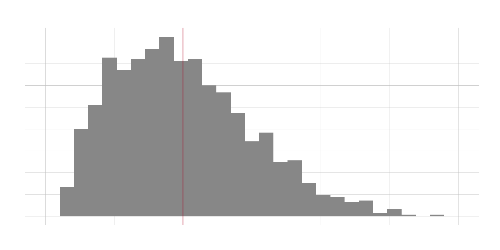
- Grundgesamtheit: M = 170, SD = 10
Stichprobenziehung und -kennwerte
Eine einzelne Stichprobe
- Wir ziehen eine Zufallsstichprobe von n = 30 Studierenden und erheben deren Körpergröße.
- In dieser Stichprobe beträgt die mittlere Körpergröße M = 172 (SD = 11).
Stichprobenkennwerte
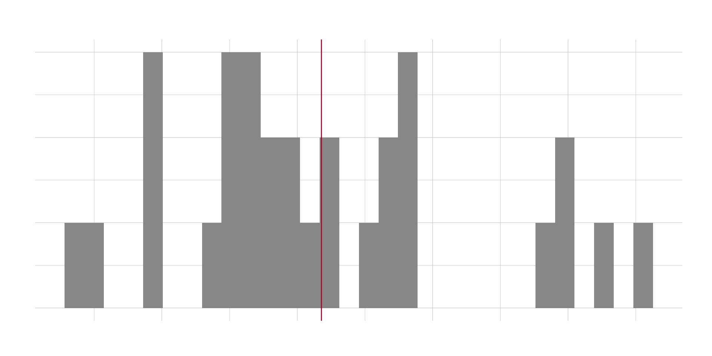
Wiederholte Stichproben
- Asymptotische Inferenz basiert auf der Annahme, dass die Mittelwerte vieler Stichproben derselben Grundgesamtheit normalverteilt sind.
- wir ziehen 1000 Stichproben mit jeweils n = 30
- Blau: Mittelwert in der Grundgesamtheit, Rot: Mittelwert in der einzelnen Stichprobe
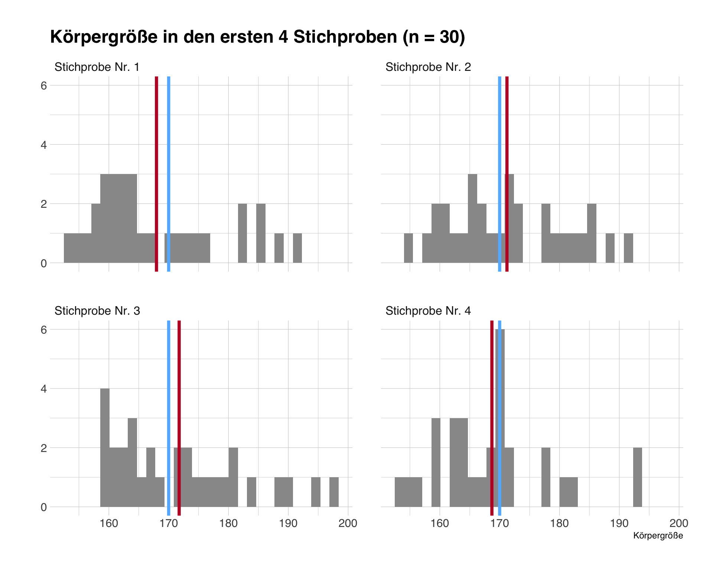
Stichprobenmittelwerte und SE
Die Mittelwerte der einzelnen Stichproben streuen um den wahren Populationsmittelwert von 170 = Standardfehler (SE).
SE = \(SD(x)/\sqrt(n-1)\), den wir anhand einer Stichprobe berechnen können, als Schätzer für die Streuung der Stichprobenmittelwerte.
SE auf Basis unserer ersten Stichprobe: SE = \(11/\sqrt(29)\) = 2.
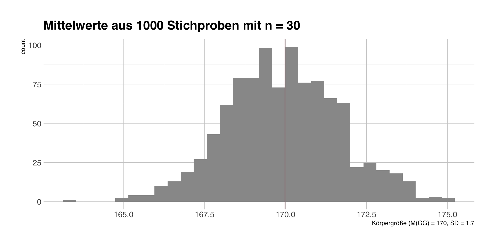
- Bei unseren 1000 simulierten Stichproben ist der Mittelwert der Mittelwerte M = 169.9.
- Die Standardabweichung der Mittelwerte ist SE = 1.7.
Stichprobentheorie und -empirie
- Stichprobentheorie sagt uns wie bestimmte Kennwerte (z.B. Mittelwerte) in unendlich wiederholten Stichproben verteilt sind.
- Diese Information können wir mit den Schätzern aus einer Stichprobe kombinieren.
- Darauf basieren die Intervallschätzung und Hypothesentests.
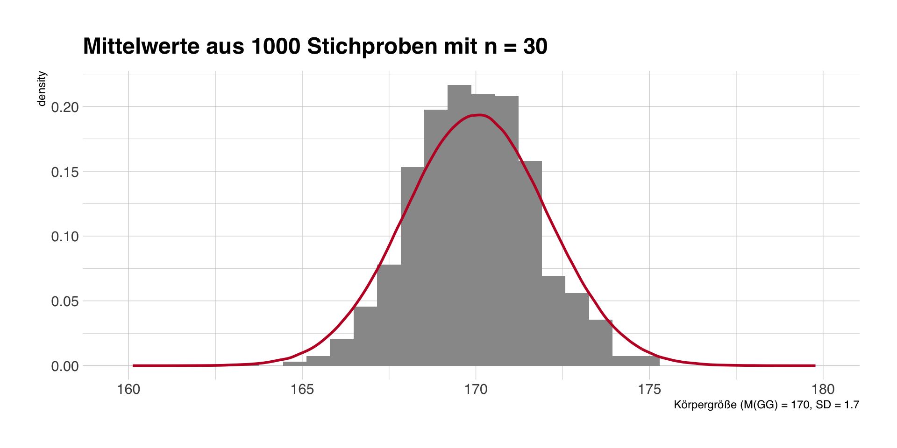
Rot: Normalverteilungskurve mit Mittelwert und Standardfehler aus der ersten Stichprobe.
Konfidenzintervalle
- basieren auf der Annahme, dass ein Schätzer einer bestimmten Verteilung folgt.
- Bei einer Standardnormalverteilung (M = 0, SD = 1) liegen 95% aller Werte zwischen -1,96 und 1,96.
- Wenn wir M und SE einsetzen, bekommen wir ein 95%-CI für den Mittelwert, d.h. M - 1.96xSE und M + 1.96xSE.
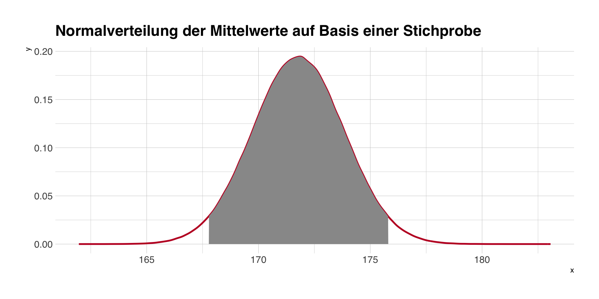
95%-Konfidenzintervall auf Basis unserer ersten Stichprobe (M und SE): 167.8 - 175.8
Interpretation eines Konfidenzintervalls
- Ein 95%-Konfidenzintervall bedeutet: in 95 Prozent aller denkbaren Stichproben würde das Konfidenzintervall den wahren Populationswert enthalten.
- Die Wahrscheinlichkeit, den wahren Wert zu enthalten, bezieht sich auf die Konstruktion von Konfidenzintervallen, nicht auf ein einzelnes Intervall.
- Wir wissen aber bei einer einzigen, konkreten Stichprobe nicht, ob unser Konfidenzintervall den wahren Wert enthält.
- Aber wir sind zuversichtlich (“confident”), dass unsere Stichprobe zu den 95% “Treffern” gehört, nicht zu den 5% Abweichlern.
- Wenn der Wert unter der Nullhypothese nicht im Konfidenzintervall liegt, bezeichnen wir das Ergebnis als statistisch signifikant.
Abdeckung der Konfidenzintervalle
Je größer die Stichprobe (n), desto kleiner der Standardfehler (SE), d.h. desto enger das Konfidenzintervall. Es gilt aber immer, bei 95%-CI enthalten langfristig 5 von 100 Intervallen nicht den Populationswert.
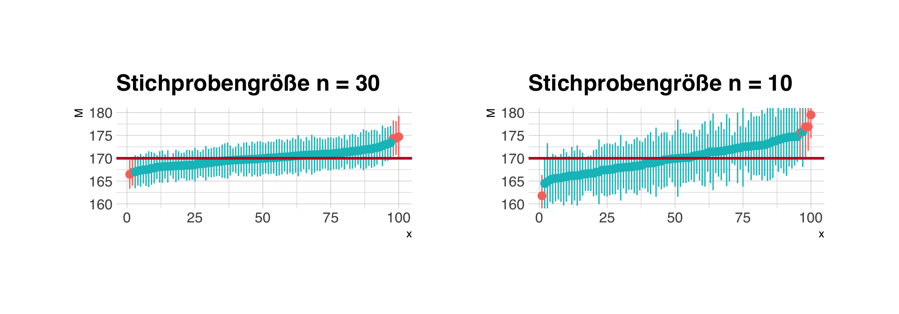
Die Welt der Nullhypothese?
- Im Gegensatz zu den unendlich vielen Alternativhypothesen, die man haben kann, gibt es immer nur eine Nullhypothese.
- Es besteht kein Unterschied/Abhängigekeit zwischen Gruppen oder Variablen.
- Von fast allen Verfahren (T-Test, Korrelation, Chi-Quadrat-Test, etc.) wissen wir, wie die “Welt der Nullhypothese aussieht.
- Wir prüfen Stichprobenkennwerte daraufhin, wie häufig oder wahrscheinlich sie in der Welt der Nullhypothese sind.
- Diese Wahrscheinlichkeit ist der p-Wert.
Was bedeutet der p-Wert?
p(Daten|H0)
- Der p-Wert ist die bedingte Wahrscheinlichkeit, die empirischen Daten (z.B. eine Mittelwertdifferenz zwischen zwei Gruppen) zu beobachten, wenn die Nullhypothese in der Grundgesamtheit gilt.
- Beispiel bei einem t-Test für eine Mittelwertdifferenz erhalten wir einen p-Wert von p = .08. Das bedeutet, wir würden in 8 von 100 Fällen eine mindestens gleich große Differenz beobachten, auch wenn in der Grundgesamtheit gar kein Unterschied ist.
Was bedeutet der p-Wert nicht?
p(Daten|H1): Die Wahrscheinlichkeit, die empirischen Daten zu beoachten, wenn die Alternativhypothese gilt.
p(H0|Daten): Die Wahrscheinlichkeit für die Richtigkeit der Nullhypothese im Lichte der Daten.
p(H1|Daten): Die Wahrscheinlichkeit für die Richtigkeit der Alternativhypothese im Licht der Daten.
Der p-Wert sagt also nichts über die Wahrscheinlichkeit der Null- oder Alternativhypothese!
außerdem:
- Das Ablehnen der Nullhypothese sagt nichts über die Alternativhypothese!
- Die meisten von uns interessieren sich nicht für die Frage, die der p-Wert beantwortet!
Was bedeutet dann statistische Signifikanz?
- Wir nennen ein Ergebnis statistisch signifikant, wenn \(p < \alpha\), wobei \(\alpha\) das zuvor angenommene Signifikanzniveau ist.
- Zwei mögliche Ursachen:
- Die Nullhypothese gilt, aber wir beobachten zufällig ein sehr seltenes Ereignis oder
- Die Nullhypothese gilt nicht. (Das heißt nicht, die Alternativhypothese gilt.)
- Wenn \(p < .05\), sind wir zuversichtlich, dass unsere Stichprobe nicht zu den 5% Abweichlern in der Welt der Nullhypothese gehört, sondern einfach die Nullhypothese nicht stimmt.
Fehler in der Inferenz
Alpha- und Beta-Fehler

Quelle: https://www.statisticssolutions.com
Alpha-Fehler
- Ein \(\alpha = .05\) bedeutet, dass wir in 5 von 100 Fällen ein signifikantes Ergebnis bekommen, obwohl die Nullhypothese gilt.
- Mit unseren 1000 Stichproben und \(\mu_0 = 170\) sollten wir beim T-Test grob 50 fälschlich signifikante Ergebnisse bekommen.
- Fehler ist abhängig von \(\alpha\), aber unabhängig von den Daten und der konkreten \(H_0\).
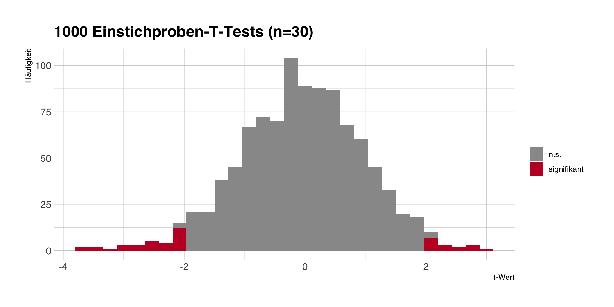
- Problem: Wir wissen (wie immer!) nicht, ob unsere Stichprobe zu den grauen oder roten Stichproben gehört.
Beta-Fehler und statistische Power
- Um Beta-Fehler (H0 wird fälschlich angenommen) zu verringern, brauchen wir statistische Power bzw. Präzision (vgl. Konfidenzintervalle).
- Um die Power/Präzision eines Tests/einer Schätzung zu erhöhen, muss man zumeist die Stichprobengröße erhöhen.
- Per Umstellung der SE-Formel kann man die nötige Stichprobengröße für erwartete Schätzer berechnen.
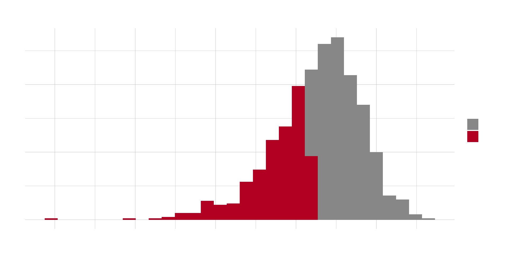
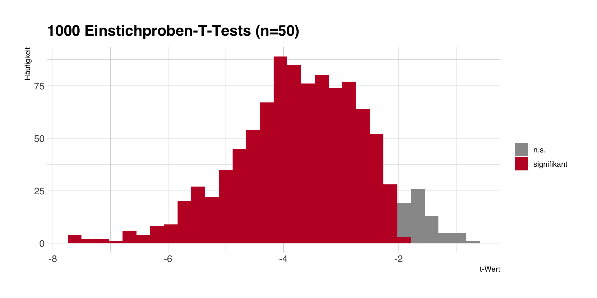
Take home message
Inferenzstatistik ‚funktioniert’, weil…
- wir die Form der Verteilung von Kennwerten bei wiederholter Durchführung von Zufallsstichproben kennen (zentrales Grenzwerttheorem) und
- wir die Parameter der Verteilung aus den Daten unserer Stichprobe schätzen können.
- Aber: wir kennen nur die Welt der Nullhypothese (egal für welchen Test und welchen Schätzer), d.h. alle Aussagen der NHST beziehen sich auf diese Welt.
- Die Präzision unserer Schätzung bzw. Power unseres Tests hängt ab von der Streuung des Merkmals und der Größe der Stichprobe (je größer, desto präziser). Entsprechend sollten Untersuchungen geplant werden.
- Es gibt immer Alpha- und Beta-Fehler, und für eine Stichprobe können wir nie exakt wissen, wo wir stehen.
Hauptsache signifikant?
- Hypothesentests als stumpfe Rituale mit dem Ziel, p < .05 zu erhalten.
- von Konvention zum reinen Selbstzweck (Signifikanz = gut, keine = schlecht).
- Das sog. p-Hacking bedeutet, die Daten und Analysen so zu frisieren, bis ein stat. signifikantes Ergebnis erscheint.
- Signifikanz sagt nichts über substanzielle Bedeutung!
- Bitte in Zukunft beachten:
- Nicht p-hacken, nicht im Nachhinein am Alpha-Niveau schrauben!
- Kein Bedauern nicht-signifikanter Ergebnisse (“leider knapp nicht signifikant”)!
Fragen?
Sitzung 2
Klassische Statistiklehre

Quelle: https://onishlab.colostate.edu/wp-content/uploads/2019/07/which_test_flowchart.png
Datenanalyse als Rezeptsammlung
In der klassischen Statistikausbildung (auch bei uns) als Rezeptesammlung:
- Mittelwerte in (genau) zwei Gruppen vergleichen - T-Test
- Mittelwerte in mehr als zwei Gruppen vergleichen - Varianzanalyse (ANOVA)
- Zusammenhänge von kategoriellen Variablen testen - \(\chi^2\)-Test
- …
Fokus auf Unterschieden und Spezifika statt auf Gemeinsamkeiten
Viele Verfahren sind aber mindestens funktional, oft auch mathematisch äquivalent!
Beispielstudie: Auty & Lewis (2004)
There has been little attempt to understand the influence on children of branded products that appear in television programs and movies. A study exposed children of two different age groups (6–7 and 11–12) in classrooms to a brief film clip. Half of each class was shown a scene from Home Alone that shows Pepsi Cola being spilled during a meal. The other half was shown a similar clip from Home Alone but without branded products. All children were invited to help themselves from a choice of Pepsi or Coke at the outset of the individual interviews.
Beispielstudie: Daten
| id | pepsi_placement | pepsi_chosen |
|---|---|---|
| 49 | 1 | 0 |
| 54 | 1 | 0 |
| 19 | 1 | 1 |
| 6 | 1 | 1 |
| 52 | 1 | 0 |
Beispielstudie: Chi-Quadrat Test
Kreuztabelle (Spaltenprozente)
| pepsi_chosen | no_placement | placement |
|---|---|---|
| 0 | 57 | 37 |
| 1 | 43 | 63 |
Chi-Quadrat Test
| Chi2(1) | p | Cramer’s V (adj.) | Cramers_v_adjusted CI |
|---|---|---|---|
| 4.14 | 0.042 | 0.17 | (0.00, 1.00) |
Beispielstudie: Bivariate Korrelation
Pearson Korrelation
| Parameter1 | Parameter2 | r | 95% CI | p |
|---|---|---|---|---|
| pepsi_placement | pepsi_chosen | 0.20 | (0.01, 0.38) | 0.042 |
Alternative hypothesis: true correlation is not equal to 0
Kendall Korrelation
| Parameter1 | Parameter2 | tau | z | p |
|---|---|---|---|---|
| pepsi_placement | pepsi_chosen | 0.20 | 2.03 | 0.043 |
Alternative hypothesis: true tau is not equal to 0
Beispielstudie: Mittelwertvergleiche
t-Test
| Difference | 95% CI | t(103) | p | d |
|---|---|---|---|---|
| -0.20 | (-0.39, -0.01) | -2.06 | 0.042 | -0.41 |
ANOVA
| Parameter | Sum_Squares | df | Mean_Square | F | p | Eta2 |
|---|---|---|---|---|---|---|
| pepsi_placement | 1.03 | 1 | 1.03 | 4.23 | 0.042 | 0.04 |
| Residuals | 25.10 | 103 | 0.24 |
Gemeinsamkeiten und Unterschiede
- dieselbe Testentscheidung (signifikanter Unterschied zwischen den Gruppen bzw. signifikanter Zusammenhang zwischen Placement und Produktwahl).
- bei 3 Verfahren exakt gleicher p-Wert (d.h. Berechnung ist identisch), beim Chi-Quadrat-Test einen (leicht) abweichenden (d.h. Berechnung ist nicht identisch).
- die Verfahren unterscheiden sich vor allem im Modelloutput
- manchmal nur globale Teststatistiken (Chi-Quadrat, F-, t-Wert), manchmal auch Konfidenzintervalle oder Effektgrößen
- auch wenn es z.T. substanziell-statistische Unterschiede gibt, unterscheiden sich vor allem die Konventionen des Berichtens
Das Allgemeine Lineare Modell
(General linear model, GLM)
“The only formula you’ll ever need.” Andy Field
Datenanalyse als statistische Modellierung
- Datenanalyse als Anwendung und Test bestimmter statistischer Modelle
- ein statistisches Modell ist eine vereinfachte Vorstellung, wie die beobachteten Daten zustande kommen (könnten)
- wir wenden diese Modell an und prüfen, wie gut die empirischen Daten dazu passen
\[ outcome_i = Model_i + error_i \]
- beobachtete Daten (Outcome) als Summe von modellierten und nicht-modellierten Zusammenhängen
Das Nullmodell
Frage: Wenn wir nur einen Schätzwert \(a\) für \(Y\) haben, welcher ist der beste Schätzer?
\[ Y_i = a + \epsilon_i \]
- das beste \(a\) ist dasjenige, das den Fehler \(\epsilon\) minimiert (\(\epsilon_i = Y_i - a\))
- bester Schätzer = kleinste Summe quadrierter Abweichungen \(\epsilon_i\) von \(y\)
- Kriterium der least squares -> Ordinary Least Squares (OLS)
Antwort: Mittelwert \(\bar{x}\) als der beste Modellkoeffizient im Nullmodell
Problem: damit erklärt das Modell aber nichts, es fehlt eine Prädiktorvariable \(X\)
Modellformel für das GLM (bivariat)
\[ Y_i = b_0 + b_1 X_i + \epsilon_i \]
- Grundidee, eine Variable \(Y\) (abhängige Variable, Outcome) durch ein statistisches Modell mit einem oder mehr Parametern \(b\) vorhersagen zu lassen
- Annahme: linearer Zusammenhang, d.h. \(Y\) hängt nur von \(b_0\) und der durch \(b_1\) gewichteten (unabhängige) Prädiktorvariable \(X\) ab
- \(b_0\) = Intercept = Achsenabschnitt = vorhergesagter Wert von \(Y\), wenn \(X = 0\)
- grundlegende Interpretation:
- “je mehr X, desto mehr Y”, wenn \(b_1 > 0\), und
- “je mehr X, desto weniger Y”, wenn \(b_1<0\).
- es bleibt ein Vorhersage- bzw. Residualfehler \(\epsilon\) (der minimiert wird)
Modellformel für das GLM (multivariat)
\[ Y_i = b_0 + b_1 X_1 + + b_2 X_2 + b_3 X_3 + ... + \epsilon_i \]
- weil der Modell eine lineare Gleichung ist, können wir problemlos mehrere Prädikorvariablen \(X\) hinzufügen
- Outcome \(Y\) als eine (gewichtete) Linearkombination der Prädiktorvariablen \(X_1\) … \(X_k\)
- Parameter \(b_1\), \(b_2\), \(b3\) … sind die Gewichte, mit denen die Prädiktoren \(X\) zur Vorhersage von \(Y\) beitragen
- Interpretation von jedem \(b\) ist dieselbe wie im bivariaten Fall
- Intercept \(b_0\) ist der vorhergesagte Wert von \(Y\), wenn alle \(X_1 = X_2 = X_3 = 0\).
Anwendungsfälle des GLM
- Wenn die Prädiktorvariablen \(X\) kategoriell sind, entspricht das GLM dem T-Test bzw. der Varianzanalyse.
- Wenn die Prädiktorvariablen \(X\) metrisch sind, entspricht das GLM der linearen Regression bzw. Korrelation.
- Man kann problemlos beliebig viele kategorielle und metrische Prädiktoren mischen.
- Die Interpretation ist immer dieselbe, d.h. man muss nur eine Interpretationsregel lernen.
Annahmen und Erweiterungen
- Annahme: Zusammenhang zwischen \(X\) und \(Y\) ist linear
- wenn die Annahme nicht gerechtfertigt ist, kann man auch andere funktionale Zusammenhänge modellieren,
siehe Sitzung zur logistischen Regression
- wenn die Annahme nicht gerechtfertigt ist, kann man auch andere funktionale Zusammenhänge modellieren,
- Annahme: Untersuchungseinheiten sind unabhängig voneinander
- wenn die Annahme verletzt ist, kann man Abhängigkeiten zwischen Fällen modellieren,
siehe Sitzung zu Multilevel-Modellen
- wenn die Annahme verletzt ist, kann man Abhängigkeiten zwischen Fällen modellieren,
Welche Kennziffern sind relevant?
- Modellparameter bzw. Regressionskoeffizienten \(b\) geben die geschätzten Zusammenhänge bzw. Unterschiede wieder
- Koeffizienten haben einen Punktschätzer und einen Standardfehler bzw. ein Konfidenzintervall (Inferenzstatistik)
- (Null-)Hypothesentests der Koeffizienten = testen, ob die beobachteten Daten zur Nullhypothese \(b=0\) passen
- Modellgütemaße wie \(R^2\) quantifizieren, wie gut das statistische Modell insgesamt die Werte von \(Y\) vorhersagen kann (Verhältnis von vorhergesagter und Residualvarianz)
Modellvorhersagen
- Regressionsmodelle sind Vorhersageinstrumente
- mit Hilfe der Regressionskoeffizienten kann man für jede Kombination von Prädiktoren \(X\) das Outcome \(Y\) vorhersagen
- Vorhersagen für einzelne Individuen oder spezifische Gruppen (siehe Sitzung Modellvorhersagen)
- vorhergesagte Werte für die Visualisierung von Unterschieden und Zusammenhängen verwenden
- Vorhersagen oft intuitiver zu verstehen als einzelne Parameterschätzungen
Wie ist nun unser GLM-Rezept?
- Daten einlesen und Outcome \(Y\) deskriptiv auswerten
- GLM spezifizieren (d.h. welches sind unsere Prädiktorvariablen?) und schätzen
- Regressionskoeffizienten interpretieren (Vorzeichen, Größe, Konfidenzintervall, stat. Signifikanz)
- Modellgüte und ggf. globale Teststatistik interpretieren
- durch das Modell vorhergesagte Werte schätzen, vergleichen, visualisieren
Beispielstudie: GLM
Modelloutput (Regressionstabelle)
| Parameter | Coefficient | 95% CI | t(103) | p | Std. Coef. | Fit |
|---|---|---|---|---|---|---|
| (Intercept) | 0.43 | (0.29, 0.57) | 6.24 | < .001 | 0.00 | |
| pepsi placement | 0.20 | (0.01, 0.39) | 2.06 | 0.042 | 0.20 | |
| AICc | 153.96 | |||||
| R2 | 0.04 | |||||
| R2 (adj.) | 0.03 | |||||
| Sigma | 0.49 |
Interpretation
- Intercept \(b_0\): in der Kontrollgruppe (kein Placement, \(X = 0\)) vorhergesagte Wahrscheinlichkeit von .43 für Pepsi
- Regressionskoeffizient \(b_1\): bei Placement (\(X = 1\)) ist die vorhergesagte Wahrscheinlichkeit für Pepsi .20 höher als ohne Placement
- der Regressionskoeffizient \(b_1\) ist stat. signifikant (p < .05), d.h. er deckt sich nicht mit der Nullhypothese, dass es keinen Unterschied gibt
- Modellvorhersage bei Pepsi-Placement: \(0.43 + 0.20 * 1 = .63\) in der Placement-Bedingung
- \(R^2\): das Modell kann 4% der Varianz im Outcome \(Y\) erklären, der Rest bleibt unerklärt.
Was sind die Nachteile der GLM-Perspektive?
- viele SozialwissenschaftlerInnen haben es anders gelernt und verinnerlicht (“Warum machst du nicht T-Test statt Regression?”).
- Fachzeitschriften und Reviewer haben bestimmte Erwartungen und Vorgaben, AutorInnen präsentieren daher t-Test, ANOVA, etc.
- für Lektürekompetenz müssen wir (leider!) weiterhin auch die anderen Verfahren interpretieren können
Fragen?
Sitzung 3
Fragen zur praktischen Übung?
Korrelation, Regression und GLM
- historisch zwei unterschiedliche Ansätze, den Zusammenhang zweier metrischer Variablen zu analysieren: Korrelation und Regression
- Korrelation basiert auf der Idee der Kovarianz, d.h. dem “gemeinsamen Variieren” zweier Variablen
- bivariate Regression als GLM, bei dem ein metrisches Outcome \(Y\) durch eine metrische Prädiktorvariable \(X\) vorhergesagt werden soll
Form des Zusammenhangs
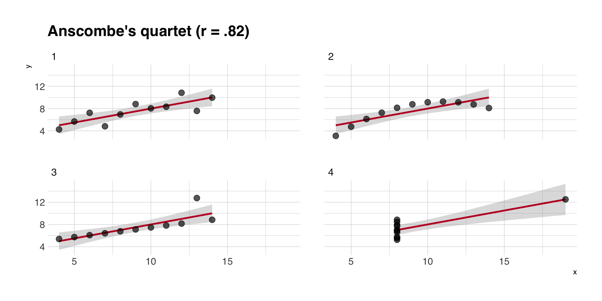
Regressions- vs. Korrelationskoeffizienten
- unstandardisierter Regressionskoeffizient \(B\) als Anstieg, d.h. zunächst Richtung des Zusammenhangs
- Korrelationskoeffizient \(r\) als Effektstärke, d.h. wie nahe die Werte von \(Y\) der Regressionsgeraden sind
- starker Zusammenhang = wenig Residualvarianz = hohe Korrelation \(r\) = hohe Varianzaufklärung \(R^2\)
Unterschiedlich starke Zusammenhänge
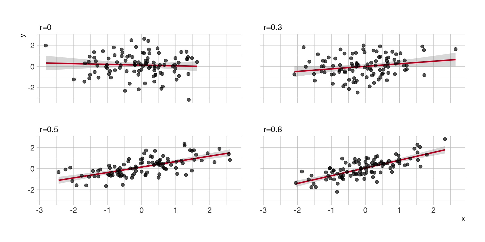
Korrelationsmatrizen
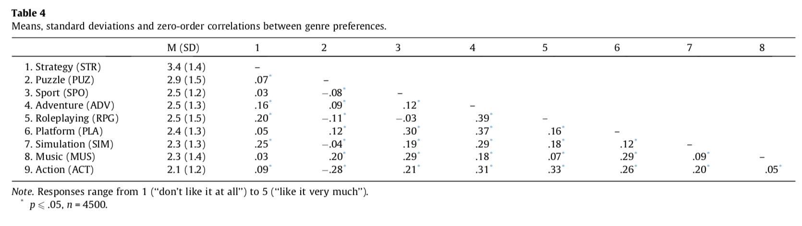
Quelle: Scharkow, Festl, Vogelgesang & Quandt, 2013
Mal wieder: Korrelation und Kausalität
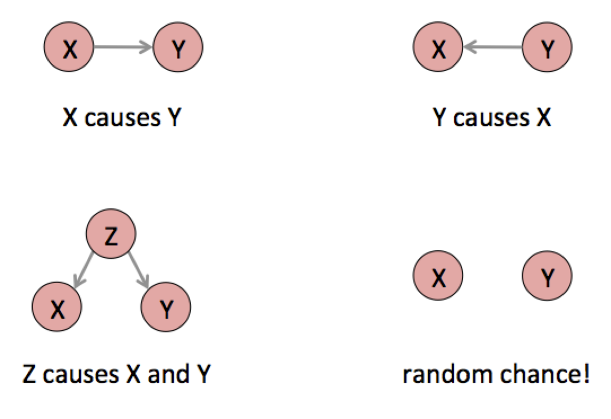
Quelle: https://www.cjr.org/tow_center_reports/the_curious_journalists_guide_to_data.php
Bivariate Regression
- linearer Zusammenhang zwischen \(X\) und \(Y\) wieder, wobei wir definieren, was Prädiktor \(X\) und was Outcome \(Y\) ist
- die Modellformel wie immer: \[ Y_i = b_0 + b_1 X_i + \epsilon_i \]
- \(b_0\) ist der vorhergesagte Wert von \(Y\), wenn \(x=0\)
- \(b_1\) ist der vorhergesagte Anstieg von \(Y\), wenn \(X\) um eine Einheit steigt (d.h. der Ansteig in Originalmetrik)
- ändert sich die Metrik von \(X\) oder \(Y\), ändert sich die Interpretation von \(b_1\)
Intercepts und Zentrierung
- Intercept bzw. Konstante als vorausgesagte Wert von \(Y\), wenn \(X=0\)
- nur sinnvoll zu interpretieren, wenn \(X\) auch die Ausprägung 0 haben kann
- man kann \(X\) zentrieren, z.B. von allen Werten \(x_i\) eine Konstante \(c\) subtrahieren, dann ist Intercept der vorausgesagte Wert für \(x = c\)
- häufigste Zentrierung ist die Mittelwertzentrierung, d.h. \(c = \bar{x}\), der Intercept bezieht sich auf den durchschnittlichen Wert von \(X\)
- Zentrierung ändert nichts an den Regressionskoeffizienten oder am Globalfit, sondern nur am Intercept
Effektgrößen und Modellgüte
- jeder Koeffizient \(B\) hat einen Standardfehler SE(B) und ein Konfindenzintervall
- mit beiden lässt sich \(H_0\) prüfen können, dass kein linearer Zusammenhang existiert - bzw. ob die Daten sich mit \(B=0\) decken
- \(B\) lässt sich substantiell in der Metrik von \(Y\) interpretieren (eine Einheit mehr/weniger \(X\) entspricht \(B\) Einheiten mehr/weniger \(Y\)), er sagt aber nichts über die Stärke des Zusammenhangs oder Modellgüte
- wie gut das lineare Modell (im Vergleich zum Nullmodell ohne Prädiktoren) vorhersagt, kann man am \(R^2\) erkennen
- im bivariaten Fall entspricht das exakt dem quadrierten Korrelationskoeffizienten \(r_{XY}\)
Unstandardisierte B vs. standardisierte Beta
- Interpretation von unstandardisiertem \(B\) setzt voraus, dass wir die Metriken von \(X\) und vor allem \(Y\) kennen
- oft wird (z.B. für Vergleiche oder Meta-Analysen) ein standardisiertes Maß gewünscht, das unabhängig von \(X\) und \(Y\) ist
- wir können Regressionskoeffizienten standardisieren, in dem wir
- entweder die Daten \(X\) und \(Y\) vor der Analyse z-standardisieren (M = 0, SD = 1)
- oder den Koeffizienten selbst standardisieren, durch \(\beta = b \frac{s_x}{s_y}\)
- im bivariaten Fall (nur dort!) entspricht \(\beta\) dem Korrelationskoeffizienten \(r\)
Korrelation vs. bivariate Regression/GLM
- \(r\) als standardisierte Größe, d.h. auch ohne Kenntnis der Skalen von \(X\) und \(Y\) interpretierbar
- Korrelationsanalyse verführt ggf. weniger zu kausalen (Fehl-)Interpretationen als ein GLM mit unabhängiger und abhängiger Variable
- bei Korrelationen sind alternative Verfahren für nicht-metrische Daten (z.B. Spearmans Rangkorrelation) verbreitet
- beim GLM bekommt mehr Informationen: unstandardisierte Effektgrößen (inkl. Intercept)
- beide Verfahren liefern dieselben Schätzer und dieselben Testentscheidungen, basieren auf denselben Annahmen
Beispielstudie Johannes et al. (2022):
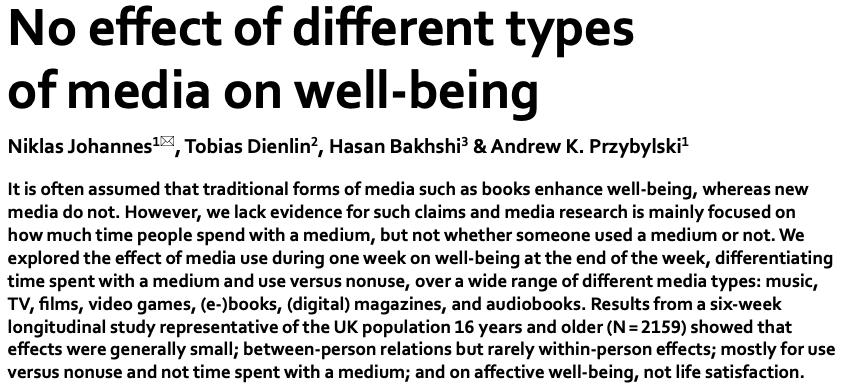
Daten
| tv_time | age | games_time | music_time |
|---|---|---|---|
| 0.0 | 22 | 0 | 4.00 |
| 0.0 | 43 | 0 | 2.50 |
| 2.0 | 38 | 0 | 0.17 |
| 5.0 | 30 | 0 | 2.00 |
| 1.5 | 29 | 1 | 0.75 |
| 2.0 | 57 | 0 | 0.00 |
| Variable | Summary |
|---|---|
| Mean tv_time (SD) | 2.73 (3.67) |
| Mean age (SD) | 46.95 (14.67) |
| Mean games_time (SD) | 0.93 (2.41) |
| Mean music_time (SD) | 2.14 (2.75) |
Outcome-Variable
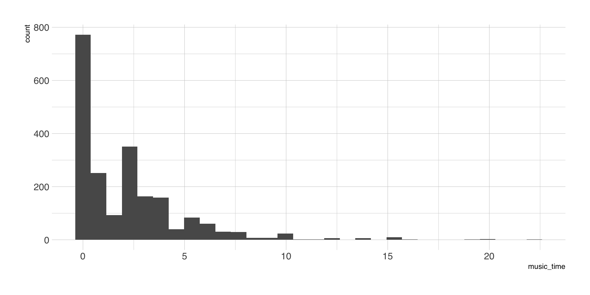
Scatterplot
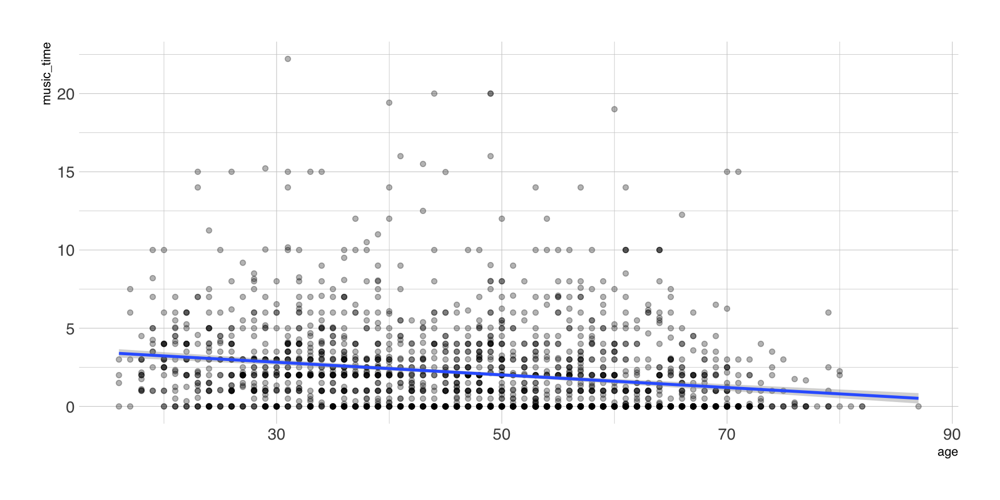
Korrelation samt Hypothesentest
| Parameter1 | Parameter2 | r | 95% CI | p |
|---|---|---|---|---|
| age | music_time | -0.22 | (-0.26, -0.17) | < .001 |
Alternative hypothesis: true correlation is not equal to 0
Bivariate lineare Regression
| Parameter | Coefficient | 95% CI | t(2101) | p | Std. Coef. | Fit |
|---|---|---|---|---|---|---|
| (Intercept) | 4.04 | (3.65, 4.42) | 20.53 | < .001 | 0.00 | |
| age | -0.04 | (-0.05, -0.03) | -10.14 | < .001 | -0.22 | |
| AICc | 10125.19 | |||||
| R2 | 0.05 | |||||
| R2 (adj.) | 0.05 | |||||
| Sigma | 2.68 |
Zentrierung Alter = 18
| Parameter | Coefficient | 95% CI | t(2101) | p | Std. Coef. | Fit |
|---|---|---|---|---|---|---|
| (Intercept) | 3.31 | (3.06, 3.57) | 25.49 | < .001 | 0.00 | |
| age18 | -0.04 | (-0.05, -0.03) | -10.14 | < .001 | -0.22 | |
| AICc | 10125.19 | |||||
| R2 | 0.05 | |||||
| R2 (adj.) | 0.05 | |||||
| Sigma | 2.68 |
Mittelwertzentrierung
| Parameter | Coefficient | 95% CI | t(2101) | p | Std. Coef. | Fit |
|---|---|---|---|---|---|---|
| (Intercept) | 2.14 | (2.03, 2.25) | 36.56 | < .001 | 0.00 | |
| age centered | -0.04 | (-0.05, -0.03) | -10.14 | < .001 | -0.22 | |
| AICc | 10125.19 | |||||
| R2 | 0.05 | |||||
| R2 (adj.) | 0.05 | |||||
| Sigma | 2.68 |
Transformierte Y-Variable (Minuten)
| Parameter | Coefficient | 95% CI | t(2101) | p | Std. Coef. | Fit |
|---|---|---|---|---|---|---|
| (Intercept) | 128.40 | (121.51, 135.28) | 36.56 | < .001 | 0.00 | |
| age centered | -2.43 | (-2.90, -1.96) | -10.14 | < .001 | -0.22 | |
| AICc | 27346.01 | |||||
| R2 | 0.05 | |||||
| R2 (adj.) | 0.05 | |||||
| Sigma | 161.06 |
Z-standardisierte Variablen
| Parameter | Coefficient | 95% CI | t(2101) | p | Std. Coef. | Fit |
|---|---|---|---|---|---|---|
| (Intercept) | 0.00 | (-0.04, 0.04) | 0.08 | 0.936 | 0.00 | |
| age zstd | -0.22 | (-0.26, -0.17) | -10.14 | < .001 | -0.22 | |
| AICc | 5872.65 | |||||
| R2 | 0.05 | |||||
| R2 (adj.) | 0.05 | |||||
| Sigma | 0.98 |
Sitzung 4
Fragen zur praktischen Übung?
Wiederholung: TV Time (h/Tag)
| Parameter | Coefficient | 95% CI | t(2101) | p | Std. Coef. | Fit |
|---|---|---|---|---|---|---|
| (Intercept) | 3.91 | (3.39, 4.43) | 14.63 | < .001 | 0.00 | |
| age | -0.03 | (-0.04, -0.01) | -4.62 | < .001 | -0.10 | |
| AICc | 11414.93 | |||||
| R2 | 0.01 | |||||
| R2 (adj.) | 0.01 | |||||
| Sigma | 3.65 |
Mittelwerte vergleichen
- in Experimenten werden oft Mittelwerte einer oder mehrerer Outcome-Variablen \(Y\) zwischen verschiedenen Versuchsbedingungen verglichen.
- auch in nicht-experimentellen Analysen sind Mittelwertvergleiche häufig
- Nullhypothese, dass zwischen den Gruppen kein Unterschied besteht, d.h. die Mittelwerte sich nicht unterscheiden
- meistverwendet: t-Test oder einfaktorielle Varianzanalyse
Dichotome Prädiktoren
- Gruppierungsvariable wird in eine Dummy-Variablen recodiert (0 = Merkmal nicht vorhanden, 1 = Merkmal vorhanden)
- Dummy-Variable wird in das Regressionsmodell aufgenommen: \(Y_i = b_0 + b_1 X_i + \epsilon_i\)
- Referenzgruppe (\(X = 0\)), ergibt \(Y = b_0\) (Intercept = Mittelwert der Kontrollgruppe)
- \(b_1\) als Differenz zwischen der Gruppe 1 und der Referenzgruppe
- t-Wert (B/SE(B) des Regressionskoeffizienten exakt wie beim t-Test
Alternative Codierung für X
- Dummy-Codierung als meistverbreitete, aber nicht einzige Art, kategorielle Variablen abzubilden
- wichtig ist nur, dass
- unterschiedliche Gruppen unterschiedliche Zahlenwerte erhalten
- klar ist, was ein Unterschied von 1 bedeutet (Interpretation Regressionskoeffizient)
- der Intercept sinnvoll interpretierbar ist
- Beispiel: simple coding mit -0.5 und 0.5 bei zwei Gruppen (vgl. Zentrierung) -
\(b_0\) ist der Gesamtmittelwert, \(b_1\) wieder der Unterschied zwischen den Gruppen
Mehr als zwei Mittelwerte vergleichen
- traditionell die einfaktorielle Varianzanalyse (ANOVA) als Standardauswertung
- F-Test der Varianzanalyse prüft die Nullhypothese, dass alle Mittelwerte gleich sind (keine Unterschiede zwischen den Gruppen)
- Alternativhypothese (“Irgendwelche Gruppen unterscheiden sich in \(Y\)”) oft theoretisch sehr unbefriedigend
- weil der F-Test nicht sagt, welche Gruppen sich im Mittelwert von \(Y\) signifikant unterscheiden, ist oft ein zweiter Analyseschritt nötig
- Post-hoc-Tests oder Kontraste, d.h. (ausgewählte oder alle) paarweisen Vergleiche zwischen zwei Gruppen
GLM mit mehr als zwei Gruppen
- um \(k\) Gruppen zu vergleichen, werden \(k-1\) Prädiktor-Variablen erstellt (vor oder automatisch während der Analyse)
- die \(k-1\) Variablen werden in das Regressionsmodell aufgenommen: \(Y_i = b_0 + b_1 X_1 + b_2 X_2 + ... + b_{k-1} X_{k-1} + \epsilon_i\).
- in der Referenzgruppe (alle \(X_1 = X_2 = ... = 0\)) ergibt sich \(Y = b_0\) (Intercept = Mittelwert der Referenzgruppe)
- \(b_1\) gibt (bei Dummy-Codierung) die Differenz zwischen der Gruppe 1 und der Referenzgruppe wider, \(b_2\) die Differenz zwischen der Gruppe 2 und der Referenzgruppe, etc.
- man kann mehrere, aber nicht alle paarweisen Vergleiche gleichzeitig modellieren
Dummy-Codierung 4 Gruppen
Gruppe A als Referenz
| Zugehörigkeit | Gruppe B | Gruppe C | Gruppe D |
|---|---|---|---|
| Gruppe A | 0 | 0 | 0 |
| Gruppe B | 1 | 0 | 0 |
| Gruppe C | 0 | 1 | 0 |
| Gruppe D | 0 | 0 | 1 |
Gruppe D als Referenz
| Zugehörigkeit | Gruppe A | Gruppe B | Gruppe C |
|---|---|---|---|
| Gruppe D | 0 | 0 | 0 |
| Gruppe A | 1 | 0 | 0 |
| Gruppe B | 0 | 1 | 0 |
| Gruppe C | 0 | 0 | 1 |
Kontraste durch gezielte Codierung
- spezifische Kontraste durch verschiedene Codierungen für die Prädiktorvariablen (vgl. Davis, 2010)
- einfache Alternative: Referenzgruppe ändern, Modell neu schätzen
- zahlreiche z.T. komplexe Codierungsverfahren, um z.B. ordinale Gruppenvariablen abzubilden
- Beispiel: Helmert coding , bei dem eine Gruppe mit jeweils allen nachfolgenden Gruppen verglichen werden,
- Kontrollgruppe mit allen Treatments
- Treatment 1 mit Treatment 2, etc.
Post-hoc-Tests
- für kategorielle Prädiktoren kann man anhand des geschätzten Modells alle Mittelwerte paarweise vergleichen
- entspricht separaten T-Tests mit je zwei Gruppen
- aufgrund der Vielzahl einzelner Tests erhöht sich die Gefahr von Alpha-Fehlern (d.h. irrtümlich signifikante Ergebnisse)
- p-Werte (manchmal auch die CI) sollten daher korrigiert werden sollten (vgl. Bender & Lange, 2001)
- verschiedenste Korrekturverfahren möglich (Bonferroni, Hochberg), eines sollte gewählt werden
GLM vs. t-Test/ANOVA
Vorteile
- keine unterschiedliche Nomenklatur und Testverfahren, egal ob 2 oder mehr Gruppen
- \(b\)-Koeffizienten sind direkt als Mittelwertdifferenzen zwischen Gruppen interpretierbar, d.h. oft sind Post-Hoc-Tests unnötig
- beliebig erweiterbar durch weitere kategorielle und metrische Prädiktoren
- oft wird der globale F-Test sowie das \(R^2\) als Effektstärkemaß zusätzlich ausgegeben
Nachteile
- Konvention und Fachgeschichte, d.h. GutachterInnen erwarten ANOVA oder t-Test
- Dummy-Codierung (oder andere Effekt-Codierungen) machen ggf. Zusatzaufwand
Beispielstudie: Kümpel (2019)
Coming across news on social network sites (SNS) largely depends on news-related activities in one’s network. Although there are many different ways to stumble upon news, limited research has been conducted on how distinct news curation practices influence users’ intention to consume encountered content. In this mixed-methods investigation, using Facebook as an example, we first examine the results of an experiment (study 1, n = 524), showing that getting tagged in comments to news posts promotes news consumption the most.
Daten
| modus | rw | modus_tag |
|---|---|---|
| Tag | 5 | 1 |
| Chronik | 2 | 0 |
| Post | 3 | 0 |
| DM | 1 | 0 |
| Chronik | 1 | 0 |
| Chronik | 2 | 0 |
Outcome-Variable
| Variable | Summary |
|---|---|
| Mean rw (SD) | 3.04 (1.30) |
Gruppenmittelwerte
| modus | n | M | SD |
|---|---|---|---|
| Chronik | 141 | 2.88 | 1.20 |
| Post | 97 | 2.79 | 1.25 |
| Tag | 152 | 3.51 | 1.33 |
| DM | 134 | 2.84 | 1.28 |
Outcome-Variable
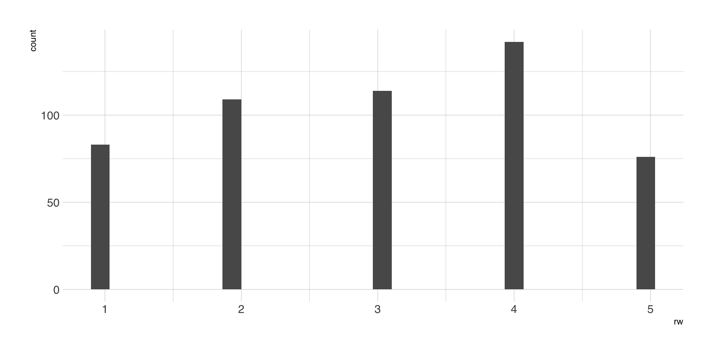
t-Test
| Difference | 95% CI | t(522) | p | d |
|---|---|---|---|---|
| -0.67 | (-0.91, -0.43) | -5.51 | < .001 | -0.48 |
GLM mit zwei Gruppen
| Parameter | Coefficient | 95% CI | t(522) | p | Std. Coef. | Fit |
|---|---|---|---|---|---|---|
| (Intercept) | 2.84 | (2.71, 2.97) | 43.26 | < .001 | 0.00 | |
| modus tag | 0.67 | (0.43, 0.91) | 5.51 | < .001 | 0.23 | |
| AICc | 1738.89 | |||||
| R2 | 0.05 | |||||
| R2 (adj.) | 0.05 | |||||
| Sigma | 1.27 |
ANOVA mit vier Gruppen
| Parameter | Sum_Squares | df | Mean_Square | F | p | Eta2 |
|---|---|---|---|---|---|---|
| modus | 49.12 | 3 | 16.37 | 10.17 | < .001 | 0.06 |
| Residuals | 837.19 | 520 | 1.61 |
GLM mit vier Gruppen
| Parameter | Coefficient | 95% CI | t(520) | p | Std. Coef. | Fit |
|---|---|---|---|---|---|---|
| (Intercept) | 2.88 | (2.67, 3.09) | 26.95 | < .001 | -0.12 | |
| modus (Post) | -0.09 | (-0.41, 0.24) | -0.51 | 0.609 | -0.07 | |
| modus (Tag) | 0.63 | (0.34, 0.93) | 4.27 | < .001 | 0.49 | |
| modus (DM) | -0.04 | (-0.34, 0.26) | -0.28 | 0.776 | -0.03 | |
| AICc | 1742.69 | |||||
| R2 | 0.06 | |||||
| R2 (adj.) | 0.05 | |||||
| Sigma | 1.27 |
Referenzkategorie ändern
| Parameter | Coefficient | 95% CI | t(520) | p | Std. Coef. | Fit |
|---|---|---|---|---|---|---|
| (Intercept) | 2.84 | (2.62, 3.05) | 25.87 | < .001 | -0.15 | |
| modus dm (Chronik) | 0.04 | (-0.26, 0.34) | 0.28 | 0.776 | 0.03 | |
| modus dm (Post) | -0.04 | (-0.37, 0.29) | -0.25 | 0.804 | -0.03 | |
| modus dm (Tag) | 0.68 | (0.38, 0.97) | 4.50 | < .001 | 0.52 | |
| AICc | 1742.69 | |||||
| R2 | 0.06 | |||||
| R2 (adj.) | 0.05 | |||||
| Sigma | 1.27 |
Post-hoc/Kontraste
| term | contrast | estimate | std.error | statistic | p.value | conf.low | conf.high | p_adjusted |
|---|---|---|---|---|---|---|---|---|
| modus | DM - Chronik | -0.04 | 0.15 | -0.28 | 0.78 | -0.34 | 0.26 | 1 |
| modus | DM - Post | 0.04 | 0.17 | 0.25 | 0.80 | -0.29 | 0.37 | 1 |
| modus | DM - Tag | -0.68 | 0.15 | -4.50 | 0.00 | -0.97 | -0.38 | 0 |
| modus | Post - Chronik | -0.09 | 0.17 | -0.51 | 0.61 | -0.41 | 0.24 | 1 |
| modus | Tag - Chronik | 0.63 | 0.15 | 4.27 | 0.00 | 0.34 | 0.92 | 0 |
| modus | Tag - Post | 0.72 | 0.16 | 4.36 | 0.00 | 0.40 | 1.04 | 0 |
Vorhergesagte Mittelwerte
| modus | estimate | std.error | statistic | p.value | conf.low | conf.high | df |
|---|---|---|---|---|---|---|---|
| Chronik | 2.88 | 0.11 | 26.95 | 0 | 2.67 | 3.09 | Inf |
| Post | 2.79 | 0.13 | 21.69 | 0 | 2.54 | 3.05 | Inf |
| Tag | 3.51 | 0.10 | 34.14 | 0 | 3.31 | 3.71 | Inf |
| DM | 2.84 | 0.11 | 25.87 | 0 | 2.62 | 3.05 | Inf |
Visualisierungsvorschlag
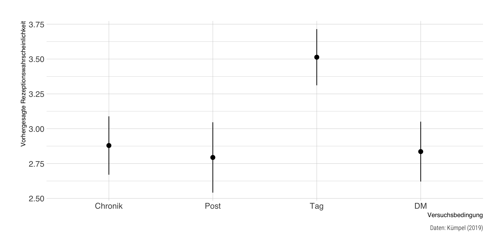
Fragen?
Literatur
Bender, R., & Lange, S. (2001). Adjusting for multiple testing—when and how?. Journal of clinical epidemiology, 54(4), 343-349.
Davis, M. J. (2010). Contrast coding in multiple regression analysis: Strengths, weaknesses, and utility of popular coding structures. Journal of data science, 8(1), 61-73.
Kümpel, A. S. (2019). Getting tagged, getting involved with news? A mixed-methods investigation of the effects and motives of news-related tagging activities on social network sites. Journal of Communication, 69(4), 373-395.
Take-home Aufgabe #1
Wir vergleichen die Tanzbarkeit (danceability) und musikalische Stimmung (valence) der Top 10-Hits über 4 Dekaden (1990er bis 2020er) auf Basis von Billboard und Spotify-Daten.
Beide Variablen sind von 0 (niedrig) - 100 (hoch) skaliert. Die Mittelwerte und Fallzahlen pro Dekade sind wie folgt:
| decade | danceability | valence | n |
|---|---|---|---|
| 1990s | 64.72 | 56.09 | 588 |
| 2000s | 67.34 | 57.98 | 558 |
| 2010s | 67.31 | 51.93 | 499 |
| 2020s | 66.10 | 51.38 | 69 |
Studienleistung, Teil 1
Interpretieren sie die Ergebnisse der beiden linearen Modelle, in denen die Mittelwertunterschiede getestet werden, Zeile für Zeile.
Welche Dekaden werden nicht miteinander verglichen, d.h. für diese bräuchten wir Post-Hoc Vergleiche?
Lösung bitte bis 04.06.2025, 10 Uhr in Moodle eintragen.
| danceability | |||
| Predictors | Coefficient (B) | SE (B) | p |
| (Intercept) | 64.72 | 0.59 | <0.001 |
| decade [2000s] | 2.62 | 0.85 | 0.002 |
| decade [2010s] | 2.59 | 0.88 | 0.003 |
| decade [2020s] | 1.38 | 1.83 | 0.452 |
| valence | ||
| Predictors | Coefficient (B) | 95% CI (B) |
| (Intercept) | 51.38 | 45.97 – 56.79 |
| decade [1990s] | 4.71 | -1.01 – 10.43 |
| decade [2000s] | 6.60 | 0.87 – 12.34 |
| decade [2010s] | 0.56 | -5.22 – 6.33 |
Sitzung 5
Fragen zur praktischen Übung?
Wiederholung: Facebook-News
| Parameter | Coefficient | 95% CI | t(520) | p | Std. Coef. | Fit |
|---|---|---|---|---|---|---|
| (Intercept) | 3.51 | (3.31, 3.72) | 34.14 | < .001 | 0.37 | |
| modus (Post) | -0.72 | (-1.04, -0.40) | -4.36 | < .001 | -0.55 | |
| modus (Chronik) | -0.63 | (-0.93, -0.34) | -4.27 | < .001 | -0.49 | |
| modus (DM) | -0.68 | (-0.97, -0.38) | -4.50 | < .001 | -0.52 | |
| AICc | 1742.69 | |||||
| R2 | 0.06 | |||||
| R2 (adj.) | 0.05 | |||||
| Sigma | 1.27 |
Multiple Regression und das GLM
- im GLM können mehrere Prädiktorvariablen in einem Modell kombiniert werden
- die Regressionskoeffizienten \(B\) sind wie sonst auch zu interpretieren, mit der Annahme, dass die anderen Prädiktoren sich nicht ändern (“ceteris paribus”)
- der Intercept \(B_0\) ist der erwartete Wert von \(Y\), wenn alle Prädiktoren \(X=0\) sind
- das \(R^2\) ist die durch alle Prädiktoren erklärte Varianz in \(Y\), d.h. nicht mehr nur die quadrierte Korrelation von \(X\) und \(Y\)
- der F-Test ist nun ein Omnibustest, d.h. er prüft, ob irgendeine Variable \(X\) einen signifikanten Zusammenhang mit \(Y\) hat
Multiple vs. viele bivariate Regressionen
- in klassischen Befragungsstudien haben wir oft mehrere plausible Prädiktoren
- eine multiple Regression vermeidete unnötig viele Einzeltests
- technisch ist es trivial, mehrere Prädiktoren ins Modell zu nehmen
- die Zusammenhänge zwischen Prädiktoren und Outcome werden unter Berücksichtigung der anderen Variablen im Modell geschätzt (Drittvariablenkontrolle)
- ein Modell mit mehreren Prädiktoren kann besser \(Y\) voraussagen als ein Modell mit weniger Prädiktoren
Regressionskoeffizienten
- bei multiplen Regressionen sollten standardisierte und unstandardisierte Regressionskoeffizienten berichtet werden
- unstandardisierte Koeffizienten lassen sich
- in der Originalmetrik von \(X\) und \(Y\) interpretieren und
- sind beim Vergleich von Modellen mit verschiedenen \(Y\), aber denselben \(X\) sinnvoll
- standardisierte Koeffizienten sind sinnvoll, um
- generell die Größe der Effekte abschätzen und
- innerhalb desselben Modells den relativen Einfluss verschiedener Variablen vergleichen zu können
Drittvariablen & Multikollinearität
- durch Hinzunahme einer weiteren \(X_2\) Prädiktorvariable wird deren gemeinsamer Einfluss auf \(X_1\) und \(Y\) in der Schätzung berücksichtigt
- eine statistische Berücksichtigung ist jedoch keinesfalls mit einer kausalen Berücksichtigung oder Konstanthaltung zu verwechseln
- wenn \(X_1\) und \(X_2\) untereinander korrelieren, sprechen wir von Multikollinearität
- obwohl die Schätzer \(B_1\) und \(B_2\) unverzerrt sind, wird die Präzision bei Multikollinearität geringer, d.h. die Standardfehler größer
- Multikollinearität ist kein statistisches Problem und kann daher auch nicht statistisch (z.B. durch Zentrierung) gelöst werden, sondern nur durch Änderungen in der Messung oder Variablenauswahl
Modellgüte: \(R^2\) und F-Test
- im bivariaten Fall entspricht das \(R^2\) dem Determinationskoeffizienten \(r^2\), also der quadrierten Korrelation
- alternative Herleitung als Verhältnis von erklärter (modellierter) und nicht erklärter (Residual-) Varianz
- Beispiel Nullmodell: keine Erklärungskraft, d.h. Residualvarianz \(var(\epsilon) = var(Y)\), also Gesamtvarianz von \(Y\)
- \(R2 = 1 - var(\epsilon)/var(Y)\), d.h. Anteil erklärter Varianz, den alle Prädiktoren zusammen ermöglichen
- F-Test: ist der Anteil erklärter Varianz signifikant von 0 verschieden
Korrigiertes \(R^2\)
- ein lineares Regressionsmodell wird durch Hinzunahme einer zusätzlichen Prädiktorvariable nie schlechter
- d.h. das naive \(R^2\) kann durch zusätzliche Prädiktoren nur ansteigen oder sich schlimmstenfalls nicht (sichtbar) ändern, aber nie sinken
- würde man nun verschiedene Modelle miteinander vergleichen, würde das komplexere (= mehr Prädiktoren) Modell besser abschneiden, obwohl wir erkenntnistheoretisch eher an Modellsparsamkeit interessiert sind
- daher betrachten wir bei multiplen Regressionen immer ein (durch die Anzahl Prädiktoren \(k\)) korrigiertes \(\bar R^2 = 1-(1-R^2){n-1 \over n-k-1}\)
Schrittweise oder hierarchische Regression
- manchmal werden Regressionsmodelle schrittweise geschätzt, d.h. einzelne Prädiktoren (oder Prädiktorenblöcke) nacheinander in das Modell eingeführt
- Differenz \(\Delta\) im \(R^2\) und/oder ein sog. partieller F-Test durchgeführt, der prüft, ob die Hinzunahme der Prädiktoren das Modell signifikant verbessert hat
- in der Schätzung der Regression gibt es keine Reihenfolge-Effekte, d.h. das finale Modell ist immer dasselbe, egal, ob man mit \(X_1\) oder \(X_2\) startet
- grundsätzlich nur die Regressionskoeffizienten aus dem finalen Modell interpretieren, das alle theoretisch postulierten Variablen enthält
- Vorteil schrittweise Testung: Übersichtlichkeit der Darstellung, Nachteil: unnötig viele Zwischenschritte, voreilige Interpretationen
Beispiel Kümpel (2019)
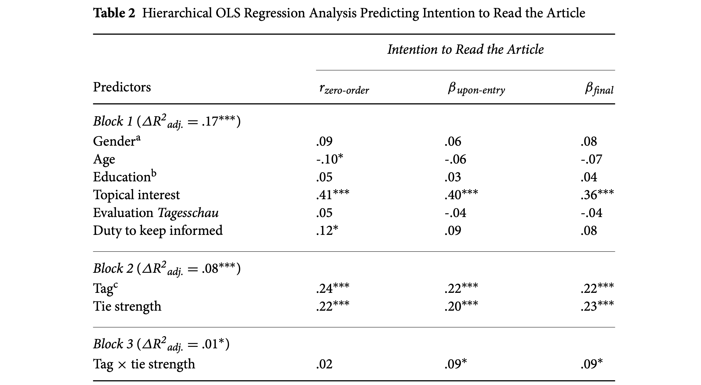
Partieller F-Test
- globaler F-Test als Modellvergleich: Residualvarianz mein Modell vs. Nullmodell
- partieller F-Test: Modell 1 vs. Modell 2 (wobei Modell 2 auch alle Prädiktoren von 1 enthalten muss)
- Interpretation, wenn der F-Test signifikant ist: Modell 2 kann sig. mehr Varianz in \(Y\) erklären als Modell 1
- Modell 2 ist damit auch signifikant besser darin, \(Y\) vorauszusagen
Kitchen-sink regression
- oft ist es verführerisch, einfach möglichst viele (plausible) Prädiktoren ins Modell aufzunehmen
- Problem 1: Gefahr von Multikollinearität steigt, weil viele Variablen untereinander korrelieren
- Problem 2: durch falsche Einbeziehung von sog. Collider-Variablen, die von \(X\) und \(Y\) beeinflusst werden, werden die Schätzungen verzerrt (vgl. Sitzung zu Annahmen)
- Problem 3: sehr umfangreiche Regressionstabellen, die gelesen werden müssen
Beispiel: Van Erkel & Van Aelst (2021)
Does exposure to news affect what people know about politics? This old question attracted new scholarly interest as the political informa- tion environment is changing rapidly. In particular, since citizens have new channels at their disposal, such as Twitter and Facebook, which increasingly complement or even replace traditional channels of information. This study investigates to what extent citizens have knowledge about daily politics and to what extent news on social media can provide this knowledge. It does so by means of a large online survey in Belgium (Flanders), in which we measured what people know about current political events, their so-called general surveillance knowledge. Our findings demonstrate that unlike following news via traditional media channels, citizens do not gain more political knowledge from following news on social media. We even find a negative association between following the news on Facebook and political knowledge.
Daten
| Age | Gender | Education | TV | Newspaper | Websites | PK | |
|---|---|---|---|---|---|---|---|
| 21 | female | High | 3 | 3 | 5 | 6 | 1 |
| 21 | male | Middle | 4 | 5 | 5 | 5 | 3 |
| 67 | male | High | 5 | 4 | 5 | 4 | 3 |
| 63 | female | Middle | 3 | 1 | 1 | 1 | 2 |
| 61 | male | High | 5 | 5 | 5 | 5 | 5 |
Deskriptivstatistik
| Variable | Summary |
|---|---|
| Mean Age (SD) | 52.98 (13.96) |
| Gender [female], % | 47.7 |
| Education [Lower], % | 13.7 |
| Education [Middle], % | 40.7 |
| Education [High], % | 45.6 |
| Mean TV (SD) | 4.43 (1.33) |
| Mean Newspaper (SD) | 3.52 (1.69) |
| Mean Websites (SD) | 3.44 (1.72) |
| Mean Facebook (SD) | 2.69 (1.95) |
| Mean PK (SD) | 3.04 (1.36) |
Outcome-Variable
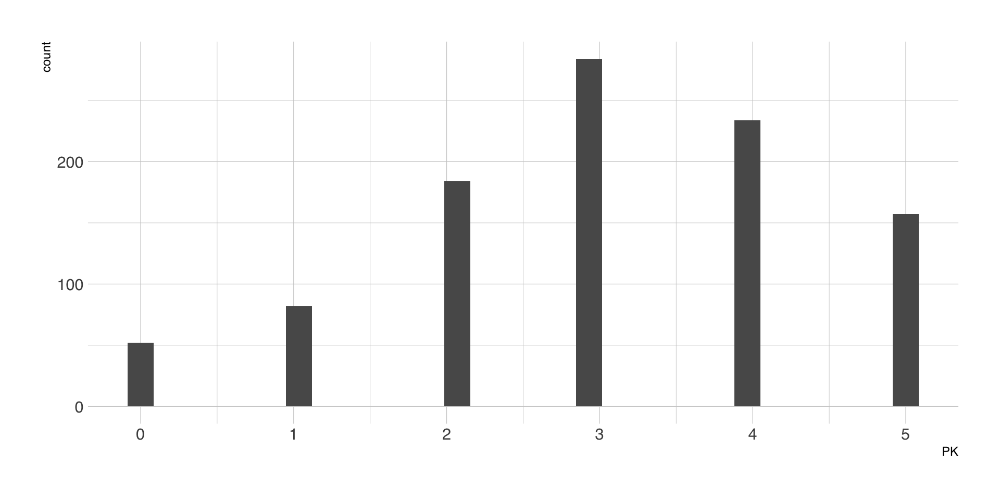
Regressionsmodell I (nur Soziodemographie)
| Parameter | Coefficient | 95% CI | t(988) | p | Std. Coef. | Fit |
|---|---|---|---|---|---|---|
| (Intercept) | 1.35 | (0.96, 1.74) | 6.81 | < .001 | -0.20 | |
| Gender (female) | -0.73 | (-0.89, -0.58) | -9.23 | < .001 | -0.54 | |
| Age | 0.03 | (0.02, 0.03) | 9.46 | < .001 | 0.28 | |
| Education (Middle) | 0.51 | (0.27, 0.75) | 4.23 | < .001 | 0.38 | |
| Education (High) | 0.89 | (0.66, 1.13) | 7.43 | < .001 | 0.66 | |
| AICc | 3217.50 | |||||
| R2 | 0.20 | |||||
| R2 (adj.) | 0.20 | |||||
| Sigma | 1.22 |
Regressionsmodell II (Mediennutzung)
| Parameter | Coefficient | 95% CI | t(983) | p | Std. Coef. | Fit |
|---|---|---|---|---|---|---|
| (Intercept) | 0.74 | (0.28, 1.20) | 3.18 | 0.002 | -0.12 | |
| Gender (female) | -0.63 | (-0.78, -0.48) | -8.21 | < .001 | -0.46 | |
| Age | 0.02 | (0.01, 0.02) | 6.23 | < .001 | 0.19 | |
| Education (Middle) | 0.39 | (0.16, 0.61) | 3.33 | < .001 | 0.28 | |
| Education (High) | 0.67 | (0.44, 0.90) | 5.69 | < .001 | 0.49 | |
| TV | 0.14 | (0.08, 0.20) | 4.46 | < .001 | 0.14 | |
| Newspaper | 0.12 | (0.07, 0.17) | 4.91 | < .001 | 0.15 | |
| Websites | 0.12 | (0.07, 0.16) | 4.77 | < .001 | 0.15 | |
| -0.07 | (-0.11, -0.03) | -3.29 | 0.001 | -0.10 | ||
| -0.07 | (-0.15, 0.01) | -1.81 | 0.070 | -0.05 | ||
| AICc | 3114.32 | |||||
| R2 | 0.29 | |||||
| R2 (adj.) | 0.28 | |||||
| Sigma | 1.15 |
Partieller F-Test (Modellverbesserung)
| Modell | Res.Df | RSS | Df | Sum of Sq | F | Pr(>F) |
|---|---|---|---|---|---|---|
| 1 | 988 | 1466.83 | NA | NA | NA | NA |
| 2 | 983 | 1308.59 | 5 | 158.24 | 23.77 | 0 |
Bonus: Visualisierung der Ergebnisse
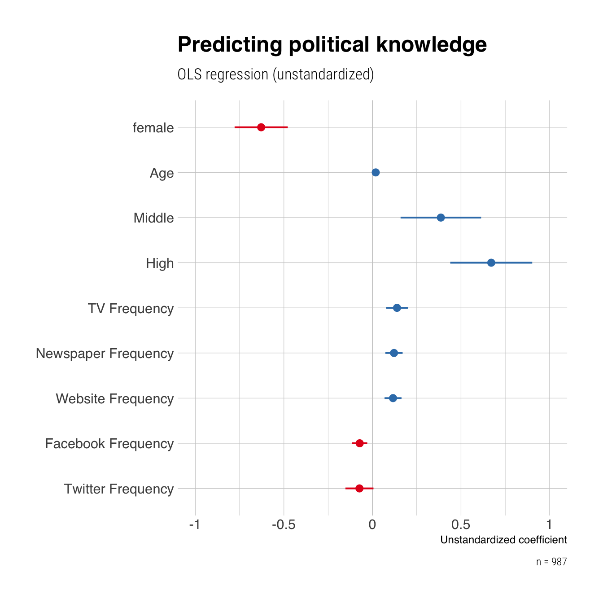
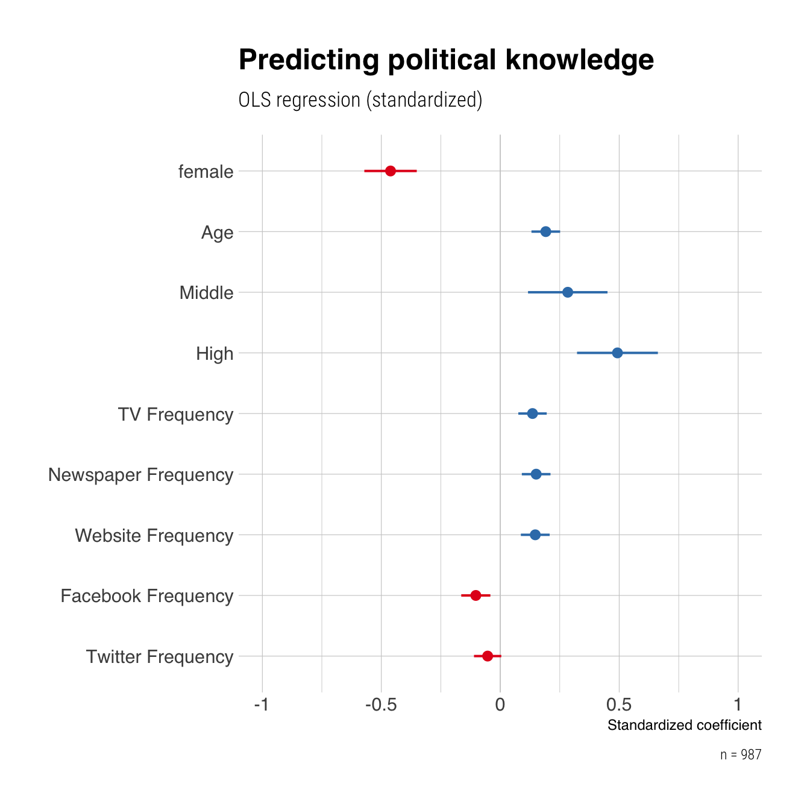
Sitzung 6
Fragen zur praktischen Übung?
Fragen zu Take Home #1
Annahmen des GLM
Statistische Annahmen
- Linearität und Additivität der Zusammenhänge
- Normalverteilung und Homoskedastizität der Residuen
- Unabhängigkeit der Residuen
- keine einflussreichen Ausreißer
- keine Multikollinearität
Kausalannahmen
- korrekt spezifiziertes Modell, d.h. keine fehlenden oder überflüssigen Kovariaten
Linearität & Additivität
- Annahme: der Zusammenhang zwischen \(X\) und \(Y\) ist linear und unabhängig von \(Z\)
- Diagnose: Inspektion des Scatterplots bzw. des Fitted/Residual-Plots
- Verletzung: nichtlineare Zusammenhänge (quadratisch, exponentiell, etc.)
- Konsequenz der Verletzung: verzerrte Regressionskoeffizienten
- Lösung: Transformation von \(X\) oder \(Y\), nichtlineares Regressionsmodell, Moderationsanalyse mit \(Z\)
Homoskedastizizät der Residuen
- Annahme: Residualvarianz ist für alle Werte von \(X\) gleich
- Diagnose: Fitted/Residual-Plots
- Verletzung: Residuen streuen in Abhängigkeit von \(X\)
- Konsequenz der Verletzung: falsche Standardfehler, ineffiziente Schätzung
- Lösung: alternative Standardfehler, Datentransformationen, alternatives Modell
Unabhängigkeit der Residuen
- Annahme: Residuen korrelieren weder miteinander noch mit den Prädiktoren
- Diagnose: Nachdenken über datengenerierenden Prozess, Test auf serielle Korrelation
- Verletzung: Residuen (und oft Variablen) sind geclustert (zeitlich, Stichprobe)
- Konsequenz der Verletzung: falsche Standardfehler, ineffiziente Schätzung
- Lösung: Multilevel-Modell, Modell mit Autokorrelationen
keine einflussreichen Ausreißer
- Annahme: alle Fälle tragen gleich zur Schätzung bei
- Diagnose: Scatterplot, Leverage-Plot
- Verletzung: einzelne Fälle beeinflussen die Höhe der Regressionsgeraden
- Konsequenz der Verletzung: verzerrte Regressionskoeffizienten
- Lösung: Ausschluss von Ausreißern (mit klar definierten Regeln!)
keine Multikollinearität
- Annahme: Prädiktorvariablen \(X\) korrelieren nicht zu stark miteinander
- Diagnose: Korrelationsmatrix der Prädiktoren, VIF-Analyse (Variance Inflation Factor)
- Verletzung: Prädiktorvariablen korrelieren stark miteinander
- Konsequenz der Verletzung: falsche Standardfehler, ineffiziente Schätzung
- Lösung: Ausschluss von Prädiktorvariablen
Beispiel: van Erkel & van Aelst, 2021
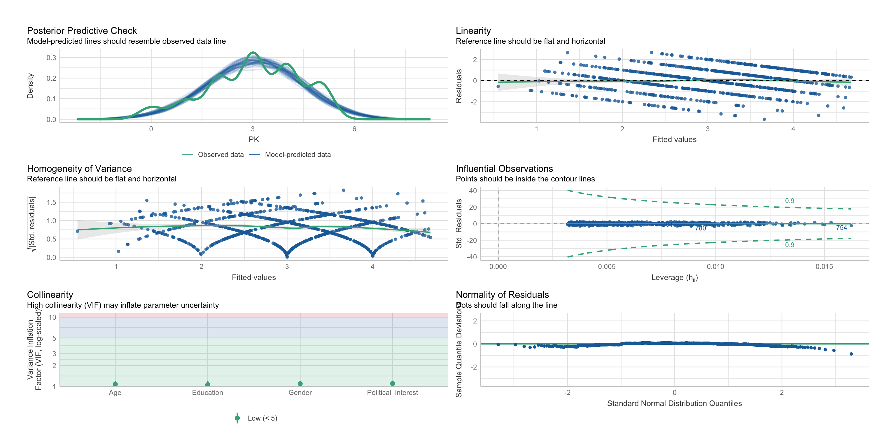
Linearität und Homoskedastizität
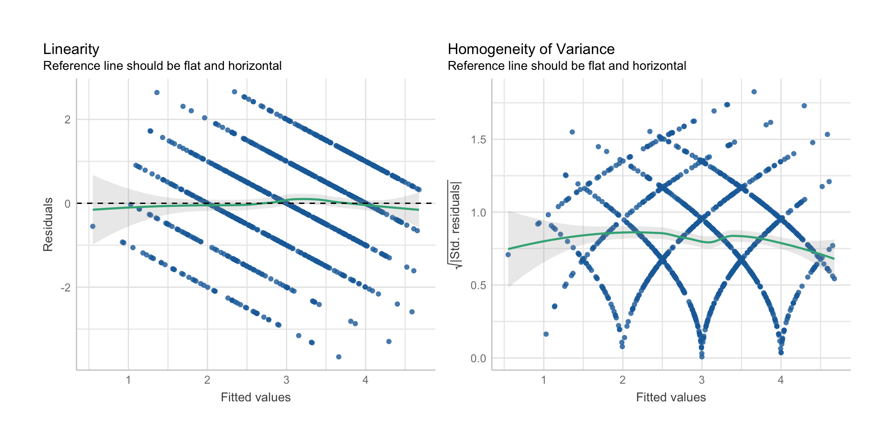
Multikollinearität
| Parameter | Political_interest | Age |
|---|---|---|
| PK | 0.49 | 0.3 |
| Age | 0.14 | NA |
$VIF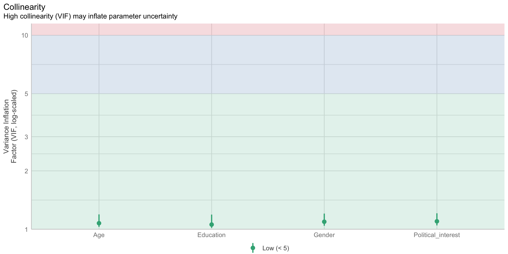
Kausalannahmen, Confounders, Colliders

Quelle: https://catalogofbias.org
Confounder- oder Ommitted-Variable-Bias

Nicht-Berücksichtigung einer relevanten Kovariate, die \(X\) und \(Y\) beeinflusst, verzerrt den geschätzen Zusammenhang zwischen \(X\) und \(Y\).
Collider-Bias

Berücksichtigung einer Kovariate, die von \(X\) und \(Y\) beeinflusst wird, verzerrt den geschätzen Zusammenhang zwischen \(X\) und \(Y\).
(Kausale) Pfadmodelle

Quelle: https://www.andrewheiss.com/blog/2020/02/25/closing-backdoors-dags/
Verletzung der Modellannahmen - und nun?
- Keine Panik! Modellannahmen sind praktisch immer verletzt (z.B. Normalverteilung der Residuen)
- viele Annahmen beziehen sich auf die Residuen, nicht auf \(X\) oder \(Y\)
- wichtig ist, einschätzen zu können, welche Konsequenzen eine Verletzung der Modellannahme haben kann
- verzerrte Schätzer (zu hoch, zu niedrig)
- falsche Standardfehler (Alpha- und Beta-Fehler)
- falsche Kausalschlüsse (Rohrer, 2018; Coenen, 2022)
- vorsichtig formulieren, Robustheit der Ergebnisse prüfen
Sitzung 7
Fragen zur praktischen Übung?
Modellvorhersagen
- Modellvorhersagen helfen, komplexe Modelle besser verstehen zu können
- durch Einsetzen von Werten für die Prädiktoren in die Regressionsgleichung können wir Werte für \(Y\) vorhersagen, d.h. \(\hat{Y}\)
- es können real existierende oder fiktive Daten eingesetzt werden
- auf Grund der statistischen Unsicherheit in den Regressionskoeffizienten sind auch die Vorhersagen mit Unsicherheit behaftet
- daher erhalten wir Punktschätzer und Konfidenz bzw. Vorhersageintervalle für \(\hat{Y}\)
Welche Daten vorhersagen?
- empirische Daten, d.h. alle oder ausgewählte Fälle des Datensatzes, auf dem das Modell basiert
- idealtypische Daten, d.h. Beispieldaten, die auf (Kombinationen von) für uns relevanten Variablen basieren
- counterfactual Daten, d.h. nicht beobachtete Daten, die das Gegenteil der beobachteten in einer oder mehreren Variablen sind
- bei kategoriellen Prädiktoren werden die einzelnen Ausprägungen verwendet
- bei metrischen Prädiktoren werden typische Fälle (Min, Max, Median, Quartile) oder gezielte Einzelwerte eingesetzt
Aggregation
- oft sind neben einzelnen Vorhersagen auch aggregierte Vorhersagen für spezifische Gruppen von Interesse
- entweder (a) empirisch vorkommende Gruppen im Datensatz oder (b) kontrafaktische Gruppen
- Analysestrategie:
- für jede Gruppe je einen Datensatz auswählen (a) oder (b) generieren
- Vorhersagen für alle Fälle pro Datensatz berechnen
- Vorhersagen aggregieren, z.B. durch Berechnen des Mittelwertes für \(\hat{Y}\)
Intervalle
- bei Modellvorhersagen unterscheidet man zwischen confidence und prediction intervals für \(\hat{Y}\)
- in die Berechnung der Konfidenzintervalle fließt nur die Unsicherheit in den Regressionskoeffizienten ein
- in die Berechnung der Vorhersageintervalle fließt zusätzlich noch die Residualvarianz ein
- Vorhersageintervalle sind daher immer breiter (je nach \(R^2\)) als die Konfidenzintervalle der Vorhersagen
- Vorhersageintervalle werden meist nur für einzelne vorhergesagte Werte angegeben, ansonsten verwenden wir nur CI
Beispiel: van Erkel & van Aelst, 2021
| Parameter | Coefficient | 95% CI | t(987) | p | Std. Coef. | Fit |
|---|---|---|---|---|---|---|
| (Intercept) | 0.46 | (0.09, 0.83) | 2.45 | 0.014 | -0.13 | |
| Gender (female) | -0.51 | (-0.65, -0.37) | -6.96 | < .001 | -0.37 | |
| Age | 0.02 | (0.02, 0.03) | 8.48 | < .001 | 0.23 | |
| Education (Middle) | 0.35 | (0.13, 0.56) | 3.15 | 0.002 | 0.26 | |
| Education (High) | 0.60 | (0.38, 0.82) | 5.42 | < .001 | 0.44 | |
| Political interest | 0.20 | (0.18, 0.23) | 14.76 | < .001 | 0.40 | |
| AICc | 3021.49 | |||||
| R2 | 0.35 | |||||
| R2 (adj.) | 0.34 | |||||
| Sigma | 1.10 |
Modellvorhersagen für die Stichprobe
| Gender | Age | Education | Political_interest | PK | Predicted_PK |
|---|---|---|---|---|---|
| female | 24 | High | 5 | 4 | 2.11 |
| male | 22 | High | 6 | 0 | 2.78 |
| female | 61 | High | 7 | 4 | 3.33 |
| male | 61 | Middle | 1 | 3 | 2.36 |
| female | 50 | Middle | 6 | 3 | 2.63 |
Vorhergesagte Verteilung
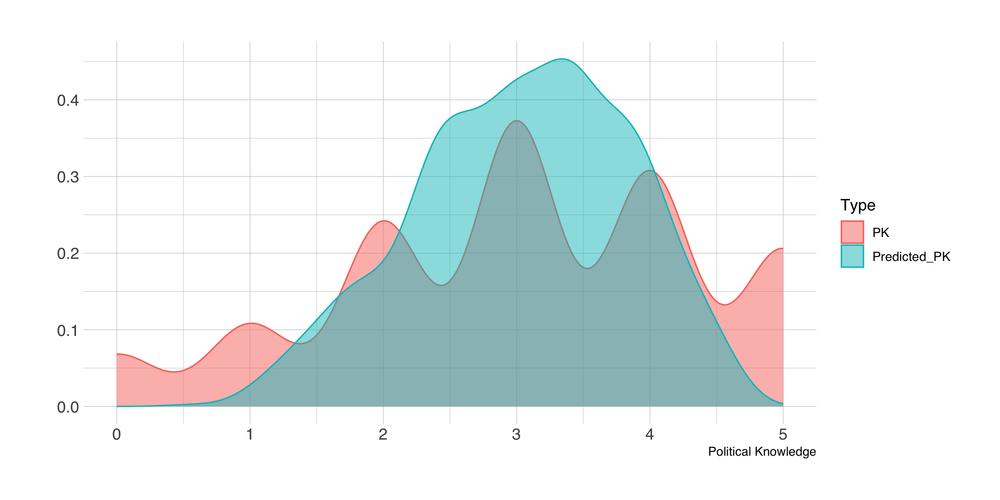
Confidence vs. prediction intervals
Confidence intervals
| Gender | Age | Education | Political_interest | PK | fit | lwr | upr |
|---|---|---|---|---|---|---|---|
| female | 45 | Middle | 3 | 2 | 1.91 | 1.76 | 2.05 |
| female | 59 | High | 7 | 4 | 3.29 | 3.15 | 3.42 |
| female | 52 | High | 7 | 4 | 3.13 | 3.01 | 3.26 |
Prediction intervals
| Gender | Age | Education | Political_interest | PK | fit | lwr | upr |
|---|---|---|---|---|---|---|---|
| female | 45 | Middle | 3 | 2 | 1.91 | -0.26 | 4.08 |
| female | 59 | High | 7 | 4 | 3.29 | 1.12 | 5.46 |
| female | 52 | High | 7 | 4 | 3.13 | 0.96 | 5.30 |
Kategorielle Prädiktoren: Geschlecht
- für jeden Fall im Datensatz wird jeweils jede Ausprägung von Geschlecht einmal eingesetzt (counterfactuals)
- alle anderen Prädiktoren bleiben, wie sie waren
| id | Age | Gender | Political_interest | PK | Predicted_PK |
|---|---|---|---|---|---|
| 1 | 45 | female | 3 | 2 | 1.91 |
| 1 | 45 | male | 3 | 2 | 2.42 |
| 2 | 59 | female | 7 | 4 | 3.29 |
| 2 | 59 | male | 7 | 4 | 3.80 |
| 3 | 52 | female | 7 | 4 | 3.13 |
| 3 | 52 | male | 7 | 4 | 3.64 |
Aggregierte Vorhersagen nach Geschlecht
- der neu generierte Datensatz mit den counterfactuals wird nach Geschlecht geteilt
- pro Teildatensatz wird der Mittelwert sowie das CI von \(\hat{Y}\) berechnet
- Ergebnis sind die vorhergesagten Mittelwerte des politischen Wissens nach Geschlecht
| Gender | estimate | std.error | conf.low | conf.high | df |
|---|---|---|---|---|---|
| male | 3.29 | 0.05 | 3.19 | 3.38 | Inf |
| female | 2.78 | 0.05 | 2.68 | 2.88 | Inf |
Visualisierung der Vorhersagen
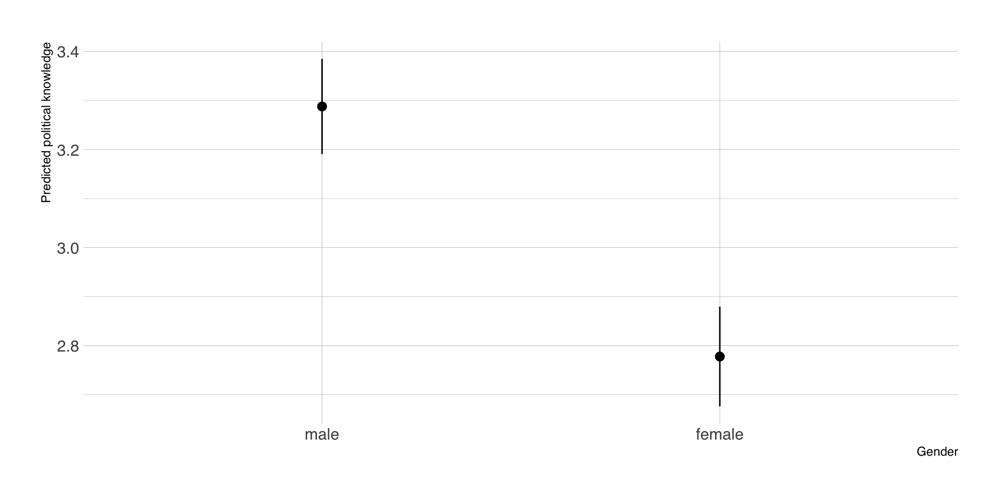
Vorhersagen nach Geschlecht und Bildung
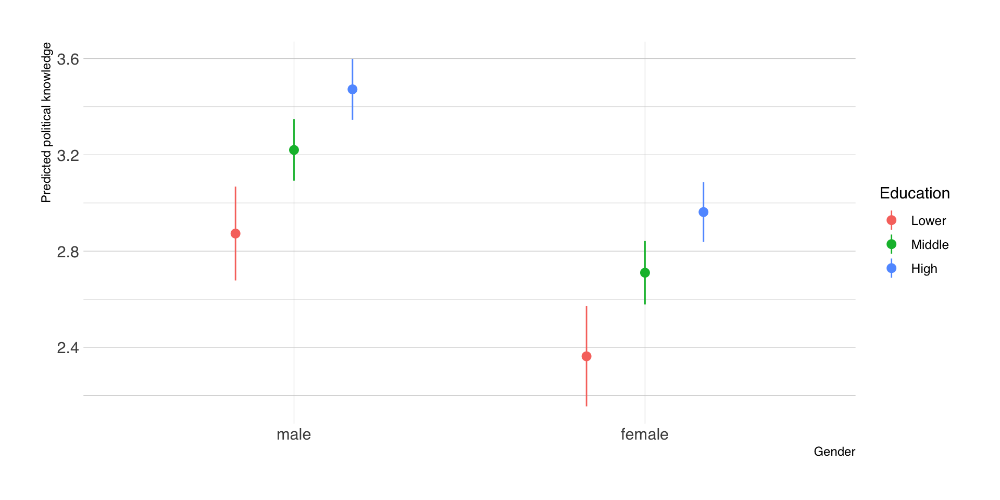
Metrische Prädiktoren: Alter
- wir wählen spezifische Werte (z.B. 18, 40, 65) der Altersvariable
- für jeden Fall wird jeder Alterswert einmal eingesetzt (counterfactuals)
- alle anderen Prädiktoren bleiben, wie sie waren
| id | Age | Gender | Political_interest | PK | Predicted_PK |
|---|---|---|---|---|---|
| 1 | 18 | female | 3 | 2 | 1.31 |
| 1 | 40 | female | 3 | 2 | 1.80 |
| 1 | 65 | female | 3 | 2 | 2.35 |
| 2 | 18 | female | 7 | 4 | 2.38 |
| 2 | 40 | female | 7 | 4 | 2.87 |
| 2 | 65 | female | 7 | 4 | 3.42 |
Fallweise Vorhersagen (typische Werte)
- statt spezifisch ausgewählten Werten verwenden wir Kennwerte
- Five Numbers: Minimum, 1. Quartil, Median, 3. Quartil, Maximum
| id | Age | Gender | Political_interest | PK | Predicted_PK |
|---|---|---|---|---|---|
| 1 | 19 | female | 3 | 2 | 1.33 |
| 1 | 44 | female | 3 | 2 | 1.89 |
| 1 | 56 | female | 3 | 2 | 2.15 |
| 1 | 65 | female | 3 | 2 | 2.35 |
| 1 | 71 | female | 3 | 2 | 2.48 |
| 2 | 19 | female | 7 | 4 | 2.40 |
| 2 | 44 | female | 7 | 4 | 2.96 |
| 2 | 56 | female | 7 | 4 | 3.22 |
Aggregierte Vorhersagen nach Alter
| Age | estimate | std.error | conf.low | conf.high | df |
|---|---|---|---|---|---|
| 19 | 2.29 | 0.10 | 2.11 | 2.48 | Inf |
| 44 | 2.85 | 0.04 | 2.76 | 2.93 | Inf |
| 56 | 3.11 | 0.04 | 3.04 | 3.18 | Inf |
| 65 | 3.31 | 0.05 | 3.22 | 3.40 | Inf |
| 71 | 3.44 | 0.06 | 3.33 | 3.56 | Inf |
Visualisierung der Vorhersagen
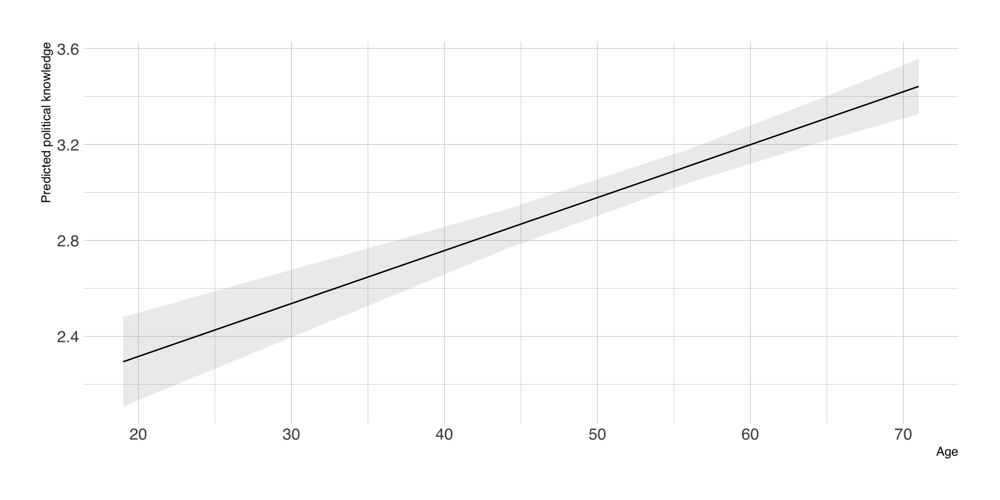
Vorhersagen nach Alter und Geschlecht
| Age | Gender | estimate | std.error | conf.low | conf.high | df |
|---|---|---|---|---|---|---|
| 19 | male | 2.54 | 0.11 | 2.33 | 2.75 | Inf |
| 19 | female | 2.03 | 0.10 | 1.84 | 2.22 | Inf |
| 44 | male | 3.09 | 0.06 | 2.98 | 3.20 | Inf |
| 44 | female | 2.58 | 0.05 | 2.47 | 2.69 | Inf |
| 56 | male | 3.35 | 0.05 | 3.26 | 3.45 | Inf |
| 56 | female | 2.84 | 0.05 | 2.74 | 2.95 | Inf |
| 65 | male | 3.55 | 0.06 | 3.44 | 3.66 | Inf |
| 65 | female | 3.04 | 0.06 | 2.92 | 3.17 | Inf |
| 71 | male | 3.69 | 0.06 | 3.56 | 3.81 | Inf |
| 71 | female | 3.18 | 0.07 | 3.03 | 3.32 | Inf |
Visualisierung der Vorhersagen
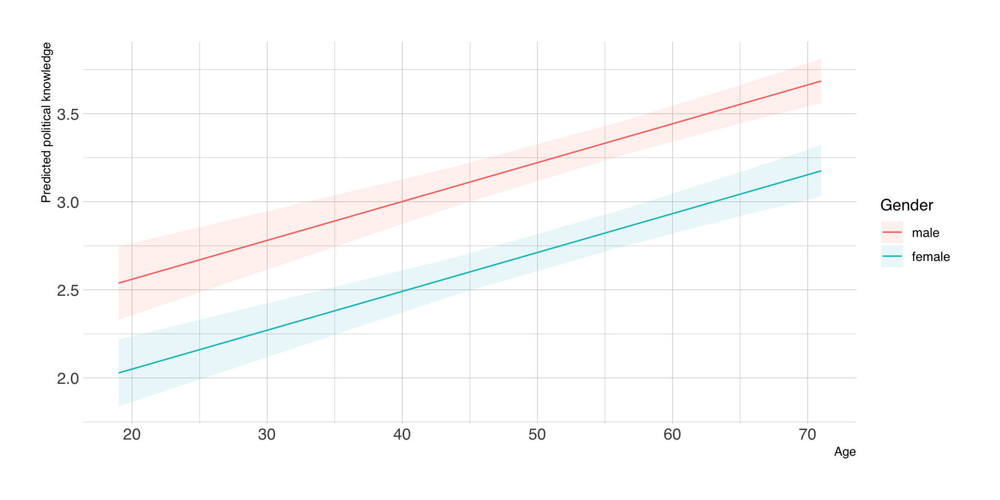
Fazit
- mit Modellvorhersagen lassen sich vielfältige Fragen auf Basis desselben Modells beantworten
- für komplexe, nichtlineare Modelle intuitive(re) Grafiken statt schwer interpretierbarer Koeffizienten
- Wahl der passenden Prädiktorkombinationen nicht trivial (counterfactual, empirisch, typisch)
- subtile Unterschiede in der Interpretation und uneinheitliche Begrifflichkeiten (marginal, conditional, adjusted predictions)
- in der Kommunikationswissenschaft (leider) selten anzutreffen, außer in der Moderationsanalyse
Take Home #2
Replizieren sie eine Regressionsanalyse aus van Erkel & van Aelst (2021) mit R oder SPSS oder anderer Software
Studierende mit gerader Matrikelnummer: Tabelle 5
Studierende mit ungerader Matrikelnummer: Tabelle 6
Der Datensatz ist in
data/VanErkel_vanAelst2021.savund enthält alle nötigen Variablen.Machen sie einen Screenshot der Regressionstabelle als PNG oder JPG und laden Sie diesen in Moodle hoch.
Deadline: 25.06.2025, 10h
Sitzung 8
Fragen zur praktischen Übung?
Wiederholung: Information Overload (Van Erkel & Van Aelst, 2021)
| Parameter | Coefficient | 95% CI | t(983) | p | Std. Coef. | Fit |
|---|---|---|---|---|---|---|
| (Intercept) | 6.93 | (5.89, 7.97) | 13.09 | < .001 | 0.03 | |
| Gender (female) | 0.72 | (0.32, 1.12) | 3.51 | < .001 | 0.23 | |
| Age | 0.02 | (0.00, 0.03) | 2.06 | 0.039 | 0.07 | |
| Education (Middle) | -0.40 | (-1.01, 0.21) | -1.29 | 0.198 | -0.13 | |
| Education (High) | -0.62 | (-1.23, -0.01) | -1.98 | 0.048 | -0.20 | |
| Outlets Used | 0.10 | (0.06, 0.13) | 4.97 | < .001 | 0.16 | |
| AICc | 5062.21 | |||||
| R2 | 0.04 | |||||
| R2 (adj.) | 0.03 | |||||
| Sigma | 3.11 |
Was tut eine intervenierende Variable?
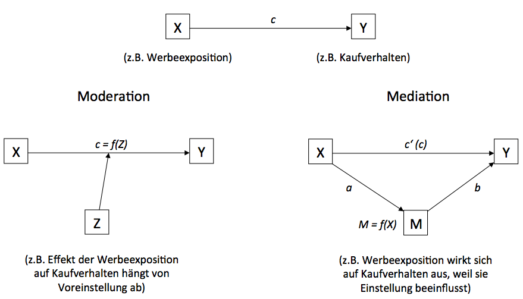
iv
Moderationsanalyse
- Diagnose: Effektheterogenität, d.h. der Zusammenhang von X und Y ist nicht für alle gleich
- der Effekt von X auf Y hängt von Moderatorvariable Z ab (“wird von Z moderiert”)
- die Größe und die Richtung des Regressionskoeffizienten ist davon abhängig, welche Ausprägung Z hat
- Beispiele:
- Experimente mit min. 2 Faktoren, die sich gegenseitig beeiflussen
- Effektheterogenität in verschiedenen Subgruppen der Stichprobe
- Effektheterogenität aktuell en vogue (person-specific media effects, Valkenburg et al., 2021), aber theoretisch und empirisch ggf. problematisch (Healy, 2017; Vuorre et al., 2022)
Woran erkennen wir Effektheterogenität?
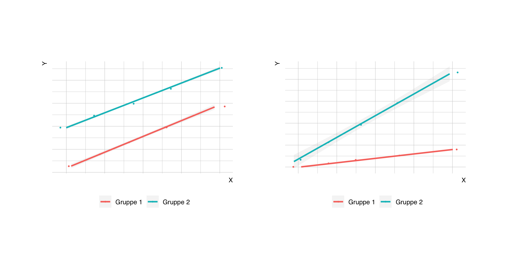
Analysemöglichkeiten
(a) separate Regressionsmodelle pro Subgruppe schätzen
- kein direkter Test der Moderationshypothese
- weniger statistische Power wg. kleinerer Subsamples
- alle Regressionskoeffizienten werden unterschiedlich geschätzt
- bei metrischen Moderatoren Dichotomisierung o.ä. nötig
(b) Moderationsanalyse mit Interaktionstermen
- gezielt für spezifische Prädiktoren möglich
- statistische Power bleibt erhalten
- metrische Moderatoren problemlos integrierbar
Beispiel getrennte Analysen
| Overload (female) | Overload (male) | |||||
| Predictors | Estimates | CI | p | Estimates | CI | p |
| (Intercept) | 7.79 | 6.47 – 9.11 | <0.001 | 7.97 | 6.53 – 9.40 | <0.001 |
| Age | 0.02 | -0.00 – 0.04 | 0.090 | 0.01 | -0.01 – 0.04 | 0.186 |
| Education: Middle | 0.08 | -0.83 – 1.00 | 0.858 | -0.59 | -1.43 – 0.25 | 0.171 |
| Education: High | 0.12 | -0.79 – 1.02 | 0.799 | -0.72 | -1.56 – 0.11 | 0.089 |
| Observations | 474 | 519 | ||||
| R2 / R2 adjusted | 0.006 / -0.000 | 0.009 / 0.004 | ||||
Regressionsformel für Moderation
Bei der Moderationsanalyse gehen wir davon aus, dass der Effekt X auf Y eine Funktion von Z ist
\(Y = b_0 + f(Z)X + b_2Z + \epsilon\)Die Funktion f(Z) sei definiert als lineare Funktion \(f(Z) = b_1 + b_3Z\)
\(Y = b_0 + (b_1 + b_3Z)X + b_2Z + \epsilon\)Durch Ausmultiplizieren erhalten wir einen Interaktionsterm \(XZ\), der einfach das Produkt von \(X\) und \(Z\) ist
\(Y = b_0 + b_1X + b_2Z + b_3XZ + \epsilon\)
Was bedeuten die Koeffizienten?
- Regressionsformel \(Y = b_0 + b_1X + b_2Z + b_3XZ + \epsilon\)
- \(b_0\) (Intercept) ist der erwartete Wert von \(Y\), wenn \(X = 0\) und \(Z = 0\)
- \(b_1\) ist der (konditionale) Effekt von \(X\), wenn \(Z = 0\)
- \(b_2\) ist der (konditionale) Effekt von \(Z\), wenn \(X = 0\)
- \(b_3\) ist der eigentliche Interaktionseffekt, d.h. die Differenz in \(b_1\), wenn \(Z\) sich um eine Einheit ändert
Interpretation konditionaler Effekte
- bei Moderationsanalysen wird oft nur auf die Signifikanz des Interaktionsterms geschaut.
- man kann und sollte aber auch die substanziellen Effekte betrachten, z.B. durch
- Schätzung der konditionalen Regressionskoeffizienten für (typische) Werte von \(Z\)
- Visualisierung der Modellvorhersagen für \(Y\) für (typische) Werte von \(Z\)
Wichtig: Bei Regressionsmodellen mit Interaktionseffekten \(XZ\) sind die Koeffizienten von \(X\) und \(Z\) nicht mehr unabhängig voneinander interpretierbar, d.h. die Effekte sind nicht mehr unkonditional für alle Fälle \(n\) gültig!
Wichtig: Damit die konditionalen Effekte überhaupt interpretierbar sind, sollten wir metrische Variablen zentrieren und kategorielle Variablen dummy- oder effektcodieren!
Interaktionsterme
- in R kann man Interaktionsterme direkt in die Modellformel für
lm()aufnehmen:y ~ x + z + x:zoder einfachery ~ x * z - alternativ werden Interaktionsterme manuell erstellt:
- vor der Schätzung die beiden Variablen \(X\) und \(Z\) miteinander zu einer neuen Variable \(XZ\) multiplizieren
- dieser Interaktionsterm \(XZ\) wird dann als zusätzliche Prädiktorvariable ins Modell aufgenommen
- für leichtere Interpretierbarkeit immer darauf achten, dass \(X\) und \(Z\) einen sinnvollen Wert für 0 haben
Beispielstudie: Vögele & Bachl (2017)
Daten
- schwab: Experimentalbedingung Dialekt schwäbisch 0 (nein), 1 (ja)
- atol: Attitude toward other language = Einstellung zum Schwäbischen (1-5)
- gesamt: Gesamtbewertung des Politikers (Outcome-Variable, 1-5)
| schwab | geschlecht_w | atol | gesamt |
|---|---|---|---|
| 1 | 1 | 4.8 | 4 |
| 1 | 1 | 3.4 | 3 |
| 1 | 0 | 2.2 | 4 |
| 1 | 1 | 4.2 | 5 |
| 0 | 1 | 3.6 | 5 |
Bivariates Modell (nur Versuchsbedingung)
| Parameter | Coefficient | 95% CI | t(361) | p | Std. Coef. | Fit |
|---|---|---|---|---|---|---|
| (Intercept) | 3.81 | (3.67, 3.94) | 55.54 | < .001 | 0.00 | |
| schwab | -0.20 | (-0.39, -0.02) | -2.22 | 0.027 | -0.12 | |
| AICc | 937.93 | |||||
| R2 | 0.01 | |||||
| R2 (adj.) | 0.01 | |||||
| Sigma | 0.88 |
Beispielanalyse: kategorielle Moderatoren
Zwei Prädiktoren (nur Haupteffekte)
| Parameter | Coefficient | 95% CI | t(360) | p | Std. Coef. | Fit |
|---|---|---|---|---|---|---|
| (Intercept) | 3.63 | (3.46, 3.79) | 43.52 | < .001 | 0.00 | |
| schwab | -0.21 | (-0.39, -0.03) | -2.31 | 0.021 | -0.12 | |
| geschlecht w | 0.34 | (0.16, 0.52) | 3.75 | < .001 | 0.19 | |
| AICc | 926.08 | |||||
| R2 | 0.05 | |||||
| R2 (adj.) | 0.05 | |||||
| Sigma | 0.86 |
Modell mit kategoriellem Moderator
| Parameter | Coefficient | 95% CI | t(359) | p | Std. Coef. | Fit |
|---|---|---|---|---|---|---|
| (Intercept) | 3.71 | (3.51, 3.90) | 37.37 | < .001 | 0.00 | |
| schwab | -0.36 | (-0.62, -0.09) | -2.66 | 0.008 | -0.12 | |
| geschlecht w | 0.19 | (-0.07, 0.46) | 1.42 | 0.158 | 0.19 | |
| schwab × geschlecht w | 0.27 | (-0.09, 0.63) | 1.49 | 0.137 | 0.08 | |
| AICc | 925.89 | |||||
| R2 | 0.06 | |||||
| R2 (adj.) | 0.05 | |||||
| Sigma | 0.86 |
Konditionale Effekte
Durch Einsetzen in die Gleichung \(f(Z) = b_1 + b_3Z\) lassen sich die konditionalen Effekte von \(X\) (Dialekt) bei verschiedenen Ausprägungen vom Moderator \(Z\) (Geschlecht) schätzen:
| term | geschlecht_w | estimate | p.value | conf.low | conf.high |
|---|---|---|---|---|---|
| schwab | 0 | -0.36 | 0.01 | -0.62 | -0.09 |
| schwab | 1 | -0.09 | 0.48 | -0.33 | 0.15 |
Average Marginal Effects (AME)
Die durchschnittlichen Effekte von \(X\) über die gesamte Stichprobe (average marginal effects) lassen sich bestimmen, indem für jeden einzelnen Fall der konditionale Effekt berechnet und dann gemittelt wird.
| term | estimate | p.value | conf.low | conf.high |
|---|---|---|---|---|
| schwab | -0.21 | 0.02 | -0.39 | -0.03 |
Average Marginal Effects (AME) entsprechen im linearen Modell den unmoderierten Koeffizienten
| term | estimate | std.error | statistic | p.value |
|---|---|---|---|---|
| schwab | -0.21 | 0.09 | -2.31 | 0.02 |
| geschlecht_w | 0.34 | 0.09 | 3.75 | 0.00 |
Vorhergesagte Werte
- Durch Einsetzen der Werte von \(X\) in die Regressionsgleichung lassen sich wie immer die vorhergesagten Werte in \(Y\) schätzen.
- Im Beispiel gibt es nur 4 typische Bedingungen (2 Treatment x 2 Geschlecht), die wir explizit vorhersagen.
| schwab | geschlecht_w | estimate | std.error | conf.low | conf.high | df |
|---|---|---|---|---|---|---|
| 0 | 0 | 3.71 | 0.10 | 3.51 | 3.90 | Inf |
| 0 | 1 | 3.90 | 0.09 | 3.72 | 4.08 | Inf |
| 1 | 0 | 3.35 | 0.09 | 3.17 | 3.53 | Inf |
| 1 | 1 | 3.81 | 0.08 | 3.65 | 3.97 | Inf |
Visualisierung der Vorhersagen
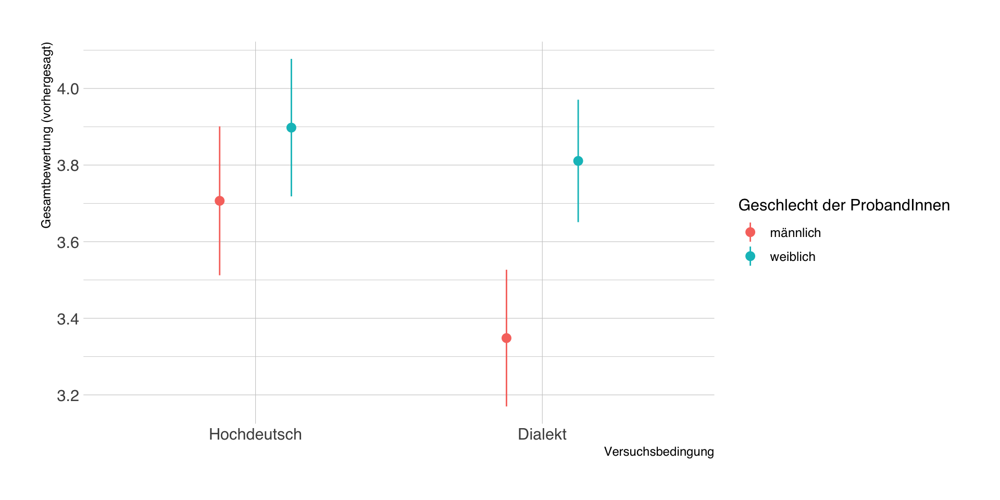
Erweiterungen
- dieselbe Analyselogik gilt auch für Moderatoren mit mehr als zwei Ausprägungen, d.h.
- alle konditionalen Effekte gelten dann für die Referenzgruppe
- es gibt jeweils \(k-1\) Haupt- und Interaktionseffekte
- in (zum Glück) seltenen Fällen gibt es auch 3-Wege-Interaktionen (2 Moderatoren)
- Einbeziehung bzw. Berechnung der Interaktionsterme \(XZ_1\), \(XZ_2\) und \(XZ_1Z_2\)
- Interpretation doppelt konditionaler Effekt sehr kompliziert
Beispiel Moderation mit 3 Gruppen
| Parameter | Coefficient | 95% CI | t(987) | p | Std. Coef. | Fit |
|---|---|---|---|---|---|---|
| (Intercept) | 2.82 | (2.55, 3.09) | 20.37 | < .001 | -0.16 | |
| Gender (female) | -0.63 | (-1.07, -0.19) | -2.81 | 0.005 | -0.46 | |
| Education (Middle) | 0.50 | (0.18, 0.82) | 3.04 | 0.002 | 0.37 | |
| Education (High) | 0.98 | (0.66, 1.30) | 6.00 | < .001 | 0.72 | |
| Gender (female) × Education (Middle) | -0.11 | (-0.61, 0.40) | -0.42 | 0.672 | -0.08 | |
| Gender (female) × Education (High) | -0.45 | (-0.94, 0.05) | -1.75 | 0.080 | -0.33 | |
| AICc | 3300.42 | |||||
| R2 | 0.14 | |||||
| R2 (adj.) | 0.13 | |||||
| Sigma | 1.27 |
Beispiel Moderation mit 3 Gruppen
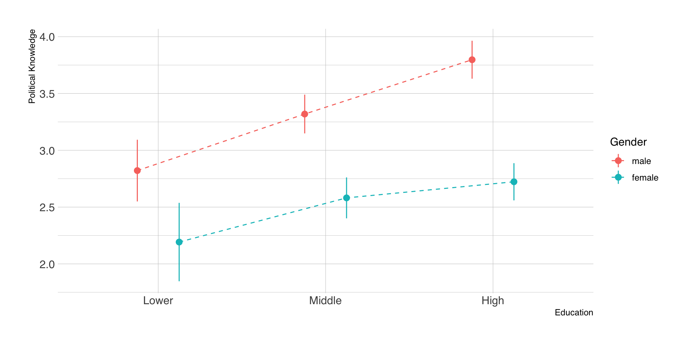
Beispiel 3-Way-Interaction
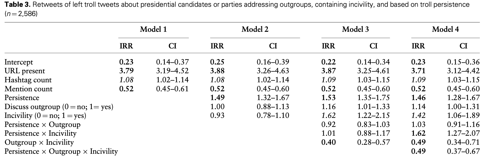
Quelle: Rains et al. (2023)
Sitzung 9
Take-Home #2
Fazit der letzten Sitzung
- Moderationsanalysen mit kategoriellen Variablen sind technisch leicht durchführbar, erfordern aber eine neue Interpretation
- die Interpretation der stat. Signifikanz der Interaktionsterme ist einfach, die substanzielle Interpretation schwierig
- durch Hinzunahme des Interaktionsterms werden aus den beteiligten Haupteffekten automatisch konditionale Effekte in der Referenzgruppe (!)
- die Koeffizienten der Prädiktoren ohne Interaktionsterm bleiben unkonditional (!)
Wiederholung: Kategorielle Moderatoren
| Parameter | Coefficient | 95% CI | t(987) | p | Std. Coef. | Fit |
|---|---|---|---|---|---|---|
| (Intercept) | 8.81 | (8.13, 9.49) | 25.59 | < .001 | 0.11 | |
| Gender (female) | -0.12 | (-1.21, 0.98) | -0.21 | 0.833 | -0.04 | |
| Education (Middle) | -0.60 | (-1.40, 0.20) | -1.47 | 0.141 | -0.19 | |
| Education (High) | -0.75 | (-1.54, 0.05) | -1.85 | 0.065 | -0.24 | |
| Gender (female) × Education (Middle) | 0.63 | (-0.63, 1.88) | 0.98 | 0.326 | 0.20 | |
| Gender (female) × Education (High) | 0.74 | (-0.50, 1.98) | 1.17 | 0.242 | 0.23 | |
| AICc | 5108.02 | |||||
| R2 | 0.01 | |||||
| R2 (adj.) | 0.00 | |||||
| Sigma | 3.16 |
Metrische Moderatoren
- die grundlegende Logik aus Interaktionsterm und konditionalen Effekten bleibt gleich
- Interpretation des Interaktionseffekts vorwiegend Vorzeichen + Signifikanz
- durch Zentrierung kann man klarer interpretierbarer konditionale Effekte erhalten
- z.B. Mittelwertzentrierung: Effekt von X bei mittlerem Z
- der konditionale Effekt bei mittlerem Z ist nicht dasselbe wie der unkonditionale Effekt
Beispielanalyse: metrische Moderatoren
Regression mit metrischem Moderator
- Anstelle einer dichotomen Variable kann man auch eine metrische Moderatorvariable berücksichtigt werden, hier zum Beispiel die Voreinstellung gegenüber dem schwäbischen Dialekt (atol).
- Hypothese: Je positiver die Einstellung zum schwäbischen Dialekt bei einer Versuchsperson, desto positiver der Effekt der Experimentalbedingung
- Reminder: der Koeffizient für Dialekt bezieht sich nun auf einen konkreten Wert von atol (konditionaler Effekt)
Regression ohne Moderator
| Parameter | Coefficient | 95% CI | t(360) | p | Std. Coef. | Fit |
|---|---|---|---|---|---|---|
| (Intercept) | 3.44 | (3.02, 3.85) | 16.38 | < .001 | 0.00 | |
| schwab | -0.20 | (-0.38, -0.02) | -2.15 | 0.032 | -0.11 | |
| atol | 0.11 | (0.00, 0.23) | 1.88 | 0.060 | 0.10 | |
| AICc | 936.42 | |||||
| R2 | 0.02 | |||||
| R2 (adj.) | 0.02 | |||||
| Sigma | 0.87 |
Regression mit metrischem Moderator
| Parameter | Coefficient | 95% CI | t(359) | p | Std. Coef. | Fit |
|---|---|---|---|---|---|---|
| (Intercept) | 4.19 | (3.60, 4.79) | 13.79 | < .001 | 0.01 | |
| schwab | -1.53 | (-2.32, -0.74) | -3.80 | < .001 | -0.11 | |
| atol | -0.12 | (-0.29, 0.06) | -1.30 | 0.196 | 0.09 | |
| schwab × atol | 0.40 | (0.17, 0.64) | 3.40 | < .001 | 0.18 | |
| AICc | 926.98 | |||||
| R2 | 0.05 | |||||
| R2 (adj.) | 0.05 | |||||
| Sigma | 0.86 |
Konditionale Effekte durch Zentrierung
- Zentrierung von atol mit 1, d.h. Koeffizient für Dialekt gilt für atol = 1 (Minimum)
| Parameter | Coefficient | 95% CI | t(359) | p | Std. Coef. | Fit |
|---|---|---|---|---|---|---|
| (Intercept) | 4.08 | (3.65, 4.51) | 18.69 | < .001 | 0.10 | |
| schwab | -1.13 | (-1.69, -0.56) | -3.91 | < .001 | 0.06 | |
| atol - 1 | -0.12 | (-0.29, 0.06) | -1.30 | 0.196 | 0.09 | |
| schwab × atol - 1 | 0.40 | (0.17, 0.64) | 3.40 | < .001 | 0.18 | |
| AICc | 926.98 | |||||
| R2 | 0.05 | |||||
| R2 (adj.) | 0.05 | |||||
| Sigma | 0.86 |
Mittelwertzentrierung
- üblicherweise wird auf den Mittelwert von \(Z\) zentriert
| Parameter | Coefficient | 95% CI | t(359) | p | Std. Coef. | Fit |
|---|---|---|---|---|---|---|
| (Intercept) | 3.81 | (3.68, 3.95) | 56.55 | < .001 | 0.01 | |
| schwab | -0.20 | (-0.38, -0.02) | -2.21 | 0.028 | -0.11 | |
| atol - mean(atol, na rm = T) | -0.12 | (-0.29, 0.06) | -1.30 | 0.196 | 0.09 | |
| schwab × atol - mean(atol, na rm = T) | 0.40 | (0.17, 0.64) | 3.40 | < .001 | 0.18 | |
| AICc | 926.98 | |||||
| R2 | 0.05 | |||||
| R2 (adj.) | 0.05 | |||||
| Sigma | 0.86 |
Conditional Effects
- wie bei Modellvorhersagen können wir für typische Werte des Moderators den Koeffizienten von \(X\) schätzen
| term | atol | estimate | p.value | conf.low | conf.high |
|---|---|---|---|---|---|
| schwab | 1 | -1.13 | 0.00 | -1.69 | -0.56 |
| schwab | 2 | -0.72 | 0.00 | -1.07 | -0.37 |
| schwab | 3 | -0.32 | 0.00 | -0.51 | -0.13 |
| schwab | 4 | 0.08 | 0.50 | -0.16 | 0.32 |
| schwab | 5 | 0.48 | 0.03 | 0.05 | 0.92 |
Conditional effects plot
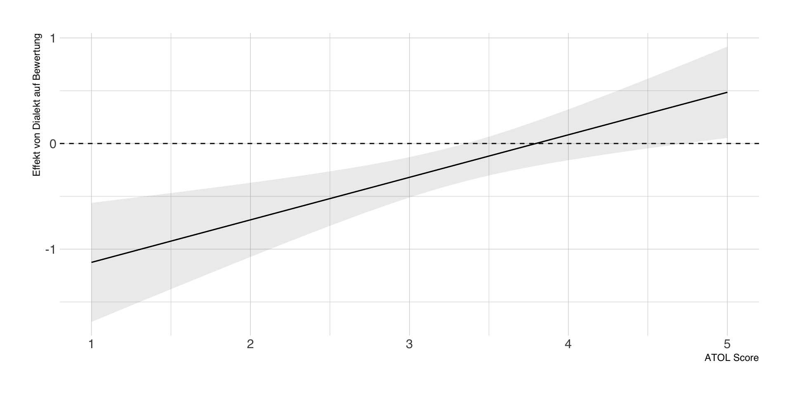
Johnson-Neyman Intervalle
- es werden Intervallgrenzen geschätzt, jenseits derer die Regressionskoeffizienten von \(X\) signifikant sind
JOHNSON-NEYMAN INTERVAL
When atol is OUTSIDE the interval [3.35, 4.74], the slope of schwab is p < .05.
Note: The range of observed values of atol is [1.00, 5.00]
- Problem 1: Alpha-Fehler durch (sehr) häufige Tests
- Problem 2: “The difference between signficant and insignificant is not itself signficant” (Andrew Gelman), sprich: die Punkte, an denen die stat. Signifikanz “umspringt”, haben keinerlei besondere Eigenschaften
- nicht verwenden!
Modellvorhersagen
- wie immer lassen sich mit ausgewählten Werten der Prädiktoren auch Vorhersagen berechnen
| schwab | atol | estimate | std.error | conf.low | conf.high | df |
|---|---|---|---|---|---|---|
| 0 | 1 | 4.08 | 0.22 | 3.65 | 4.51 | Inf |
| 0 | 3 | 3.85 | 0.07 | 3.70 | 3.99 | Inf |
| 0 | 5 | 3.62 | 0.16 | 3.30 | 3.94 | Inf |
| 1 | 1 | 2.95 | 0.19 | 2.59 | 3.32 | Inf |
| 1 | 3 | 3.53 | 0.06 | 3.40 | 3.65 | Inf |
| 1 | 5 | 4.10 | 0.15 | 3.81 | 4.39 | Inf |
Visualisierung der Modellvorhersagen
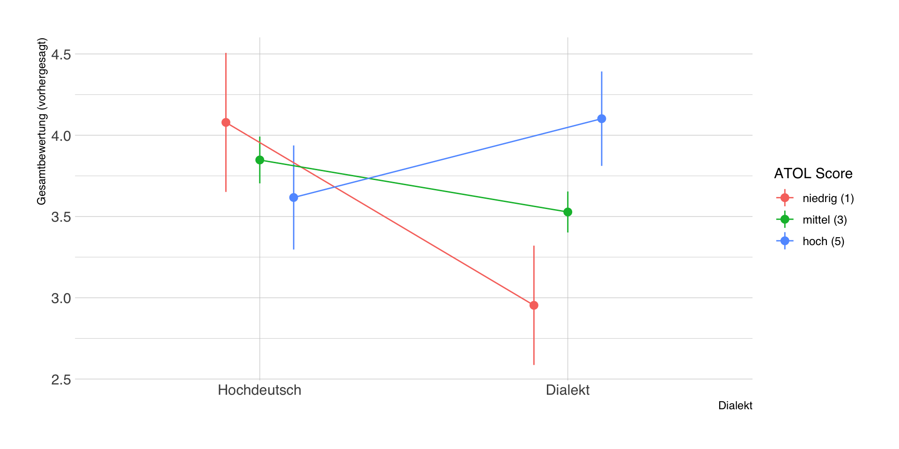
Tipps
- auf korrekte Interpretation der Referenzgruppen achten bei kategoriellen Moderatoren
- metrische Variablen zentrieren, die keinen interpretierbaren Nullpunkt haben, bevor man Interaktionsterme einfügt
- immer auch \(X\) und \(Z\) im Modell zu haben, wenn der Interaktionsterm \(XZ\) im Modell ist
- pragmatischer Vorschlag: wenn kein signifikanter Interaktionseffekt, dann lieber unkonditionales Modell (ohne Moderator) berichten
- substanzielle Interpretation durch Berechnung und Visualisierung von conditional effects und Modellvorhersagen
Fazit
- lineare Modelle mit Moderation sind in der Regel sehr (zu!) leicht zu spezifizieren, aber zumeist deutlich schwieriger substanziell zu interpretieren (außer Signifikanz des Interaktionseffekts)
- auch wenn die Regressionstabelle optisch sehr ähnlich aussieht, ändert sich Interpretation grundsätzlich
- viele SozialwissenschaftlerInnen interpretieren moderierte Effekte entweder gar nicht oder falsch
- Moderationshypothesen sind nicht per se theoretisch wertvoll, und auch bei Moderationsanalysen gibt es Alpha-Fehler
Take-Home Aufgabe #3
Altay et al. (2022) untersuchen experimentell, ob falsche Nachrichten weniger als wahre geteilt werden, und wie dies von der Interessantheit der Nachricht abhängt.
Beantworten Sie folgende Forschungsfragen mit Hilfe der Studien-Daten:
- Werden wahre Nachrichten eher geteilt als falsche?
- Werden interessante Nachrichten eher geteilt als uninteressante?
- Gibt es den im Titel des Artikels angesprochenen Effekt eines zusätzlichen “interesting-if-true” Effekts auf das Teilen von Nachrichten? Wie fällt dieser Interaktionseffekt aus?
Take-Home Aufgabe #3
- Stellen Sie die Ergebnisse des/der geschätzen Modells/Modelle sinnvoll tabellarisch oder grafisch dar (Screenshot reicht).
- Beantworten Sie die Forschungsfragen anhand von Ihnen ausgewählter Kennwerte bzw. Quantities of Interest (2-3 Sätze pro Forschungsfrage)
- Lösung als PDF-Datei bitte bis 09.07.2025, 10 Uhr in Moodle hochladen.
Take-Home Aufgabe #3
| Share | Type | Interesting |
|---|---|---|
| 2 | TN | 3 |
| 1 | TN | 6 |
| 1 | TN | 4 |
Share= Wahrscheinlichkeit, die Nachricht mit anderen zu teilen (1-6, höher ist wahrscheinlicher)Type= Nachrichtentyp (experimentell variiert,TN=wahr,FN=falsch)Interesting= Wahrgenommene Interessantheit der Nachricht (1-7, höher ist interessanter)
Sitzung 10
Kategorielle Outcomes - \(\chi^2\) Test
- oft sind wir an Zusammenhängen von kategoriellen Variablen interessiert
- Klassische Analysestrategie: Kreuztabelle und \(\chi^2\) Test auf Unabhängigkeit
- Vorteil: einfache Darstellung (Tabelle mit Spaltenprozenten, \(\chi^2\) Wert, p-Wert, Kontingenzkoeffizient)
- Nachteil: der \(\chi^2\) Test ist ein Globaltest, d.h. wir testen nur, ob es irgendwo signifikante Abweichungen der beobachteten von den erwarteten Häufigkeiten gibt, aber nicht wie und wo
- weiterer Nachteil: nur kategorielle Prädiktoren, nur bivariate Zusammenhänge
- Alternative: GLM mit logistischer Link-Funktion
Lineare Regression bei dichotomer AV
- viele vorausgesagte Werte von Y kann es in den Daten nicht geben, da nur die Werte 0 und 1 empirisch vorkommen.
- linearer Zusammenhang ist nicht gegeben, d.h. wir verstoßen gegen die Annahmen der OLS-Regression
- trotzdem häufiger Einsatz als Linear Probability Model (LPM) mit einfacher Interpretation
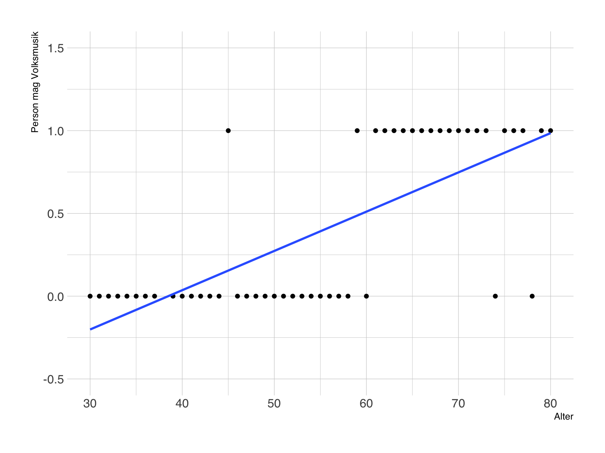
(Inverse) Logit-Funktion
- Logit-Funktion: \(P(Y) = \frac {1}{1+e^{-(\beta_0 + \beta_1 x)}}\)
- Die Logit-Funktion transformiert alle Werte in einen Bereich von 0-1.
- Die Werte von 0-1 können als Wahrscheinlichkeiten interpretiert werden.
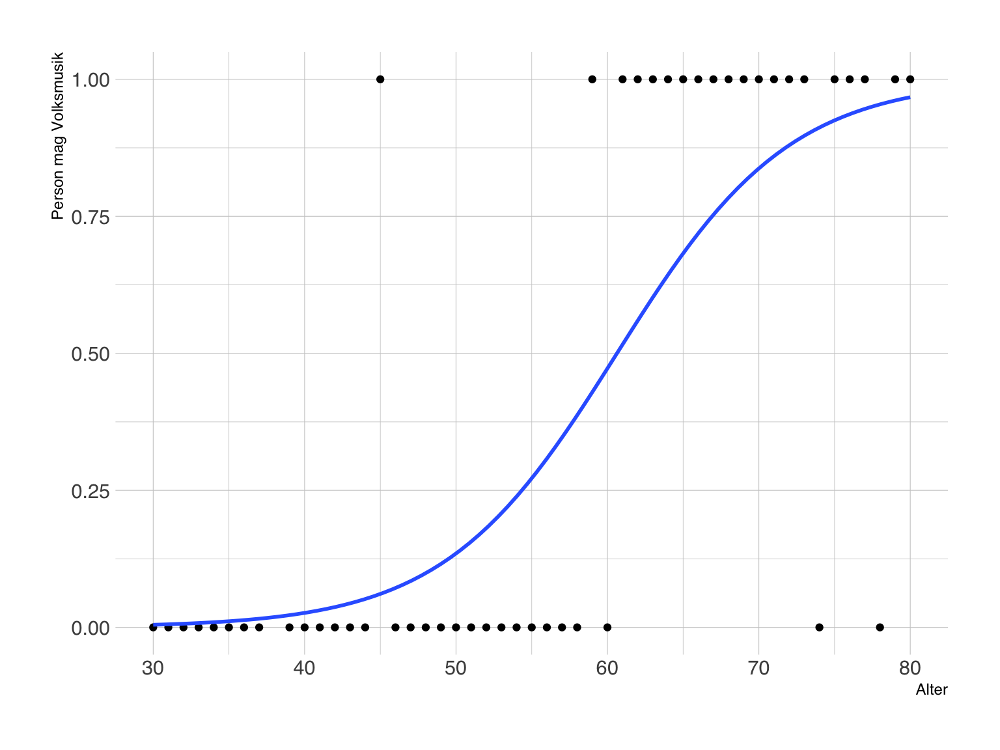
Lineare vs. logistische Regression
\(Logit(Y) = b_0 + b_1 X_i + \epsilon_i\)
- gleiche Annahmen zu Unabhängigkeit und Multikollinearität
- gleiche Logik der Modellspezifikation mit Nullmodell und Prädiktorvariablen
- gleiche Logik der statistischen Inferenz, d.h. Standardfehler und Konfidenzintervalle
- unterschiedliche Interpretation der Koeffizienten (sowohl unstandardisiert als auch standardisiert)
- unterschiedliche Maße der Modellgüte ( \(R^2\), etc.)
Interpretation logistischer Modelle
- unstandardisierte Koeffizienten sind bei logistischer Regression schwer interpretierbar
- Interpretation als (Änderung von) Wahrscheinlichkeiten ist falsch, u.a. weil diese nicht konstant sind
- 3 Möglichkeiten, logistische Modelle zu interpretieren:
- Divide-by-4-Regel mit unstandardisierten Koeffizienten
- Average Marginal Effects
- Odds-Ratios
Unstandardisierte Koeffizienten
- die Interpretation von unstandardisierten Koeffizienten im logistischen Modell hängt (auch) am Intercept bzw. an den anderen Kovariaten
- der Intercept lässt sich durch die sog. Inverse Logit Funktion (in R
plogis()) in eine Baseline-Wahrscheinlichkeit umrechnen - die Veränderung der Wahrscheinlichkeiten bei einer Änderung von \(X\) (Slope) ist nicht in allen Fällen gleich groß
- Gelman & Hill (2007) empfehlen für eine schnelle Interpretation unstandardisierte Koeffizienten die Divide-by-4-Regel
- \(B/4\) ist eine Obergrenze für die Änderung in der Wahrscheinlichkeit P(Y=1), wenn \(X\) sich um eine Einheit ändert
- Abweichung ist am Rande der Verteilung von \(Y\) größer als in der Mitte
Average Marginal Effects
- für jeden Wert von \(X\) lässt sich der Anstieg in der Logit-Funktion von \(Y\) berechnen.
- wenn wir dies für alle Werte in der Stichprobe tun, und davon den Mittelwert errechnen, erhalten wir den AME
- dieser lässt sich als durchschnittliche Veränderung in der Wahrscheinlichkeit P(Y=1) über alle Fälle interpretieren
- alternativ können wir auch wieder typische Fälle auswählen und dafür die vorgesagten Werten von \(Y\) schätzen
- dies bietet sich vor allem bei Modellen mit kategoriellen Prädiktorvariablen an (vgl. ANOVA)
Odds Ratios - Exp(B)
- die meisten logistischen Regressionen berichten statt B den Wert Exp(B), der auch als Odds Ratio (OR) bezeichnen wird
- Odds = \(P(x)/1-P(x)\) kann man im Deutschen als Chance oder Risiko übersetzen, nicht jedoch als Wahrscheinlichkeit!
- eine OR=1 bedeutet kein Effekt, OR > 1 bedeutet eine erhöhte Chance bzw. Risiko, eine OR < 1 eine niedrigere Chance/Risiko
- Exp(B) = .5 heißt: mit jedem Skalenpunkt mehr X besteht ein halb so großes Risiko
- Exp(B) = 2 heißt: mit jedem Skalenpunkt mehr X verdoppelt sich das Risiko
Modellgüte: Pseudo \(R^2\)
- weit verbreitetes Maß für die Güte einer logistischen Regression ist das Pseudo \(R^2\) von McFadden, Nagelkerke oder Cox & Snell.
- diese setzen die Log-Likelihood des Nullmodells mit dem gefitteten Modell in Beziehung, beschreiben also wieviel besser das Modell gegenüber dem Nullmodell ist
- die Interpretation ist vergleichbar mit dem klassischen \(R^2\), wobei nicht immer klar ist, inwiefern der Wertebereich wirklich von 0-1 geht
Beispielstudie Festl et al. (2013)
Daten
| cbbully_gen | cbvictim_gen | age | gender | internetuse | class |
|---|---|---|---|---|---|
| 0 | 0 | 14 | male | 2.5 | G8b |
| 0 | 0 | 13 | male | 1.0 | G7b |
| 0 | 0 | 18 | male | 1.0 | G12 |
| 0 | 0 | 14 | female | 0.5 | G8b |
| 0 | 0 | 13 | male | 1.5 | G7a |
| Variable | n_Obs | Mean | SD | Median | MAD | Min | Max |
|---|---|---|---|---|---|---|---|
| cbvictim_gen | 275 | 0.11 | 0.31 | 0 | 0 | 0 | 1 |
Nullmodell
| Parameter | Coefficient | 95% CI | z | p | Std. Coef. | Fit |
|---|---|---|---|---|---|---|
| (Intercept) | -2.14 | (-2.52, -1.75) | -10.89 | < .001 | -2.14 | |
| AICc | 187.31 | |||||
| Tjur’s R2 | 0.00 | |||||
| Sigma | 1.00 | |||||
| Log_loss | 0.34 |
Kategorieller Prädiktor
| Parameter | Coefficient | 95% CI | z | p | Std. Coef. | Fit |
|---|---|---|---|---|---|---|
| (Intercept) | -2.48 | (-3.13, -1.94) | -8.27 | < .001 | -2.48 | |
| gender (female) | 0.69 | (-0.08, 1.50) | 1.74 | 0.082 | 0.69 | |
| AICc | 186.26 | |||||
| Tjur’s R2 | 0.01 | |||||
| Sigma | 1.00 | |||||
| Log_loss | 0.33 |
Odds-Ratios (Exp(B))
| Parameter | Coefficient | CI | CI_low | CI_high | z | p | Fit |
|---|---|---|---|---|---|---|---|
| (Intercept) | 0.08 | 0.95 | 0.04 | 0.14 | -8.27 | 0.00 | NA |
| gender [female] | 2.00 | 0.95 | 0.92 | 4.46 | 1.74 | 0.08 | NA |
AME und Modellvorhersagen
AME
| term | estimate | std.error | statistic | p.value | conf.low | conf.high |
|---|---|---|---|---|---|---|
| gender | 0.07 | 0.04 | 1.71 | 0.09 | -0.01 | 0.14 |
Vorhergesagte Wahrscheinlichkeiten
| gender | estimate | std.error | statistic | p.value | s.value | conf.low | conf.high | df |
|---|---|---|---|---|---|---|---|---|
| male | 0.08 | 0.02 | 3.61 | 0 | 11.65 | 0.04 | 0.12 | Inf |
| female | 0.14 | 0.03 | 4.45 | 0 | 16.85 | 0.08 | 0.21 | Inf |
Visualisierung der Modellvorhersagen
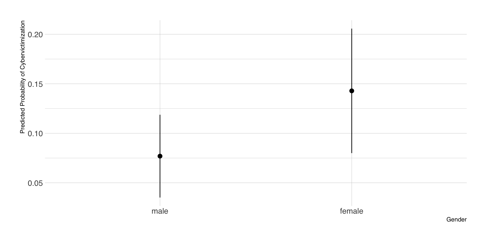
Multiple logistische Regression
| Parameter | Coefficient | 95% CI | z | p | Std. Coef. | Fit |
|---|---|---|---|---|---|---|
| (Intercept) | -2.98 | (-3.82, -2.23) | -7.41 | < .001 | -2.56 | |
| gender (female) | 0.76 | (-0.02, 1.58) | 1.88 | 0.060 | 0.76 | |
| internetuse | 0.19 | (0.00, 0.37) | 2.10 | 0.036 | 0.34 | |
| AICc | 184.36 | |||||
| Tjur’s R2 | 0.03 | |||||
| Sigma | 1.00 | |||||
| Log_loss | 0.32 |
Average Marginal Effects
| term | estimate | std.error | statistic | p.value | conf.low | conf.high |
|---|---|---|---|---|---|---|
| gender | 0.07 | 0.04 | 1.85 | 0.06 | 0 | 0.15 |
| internetuse | 0.02 | 0.01 | 1.98 | 0.05 | 0 | 0.04 |
Modellvorhersagen
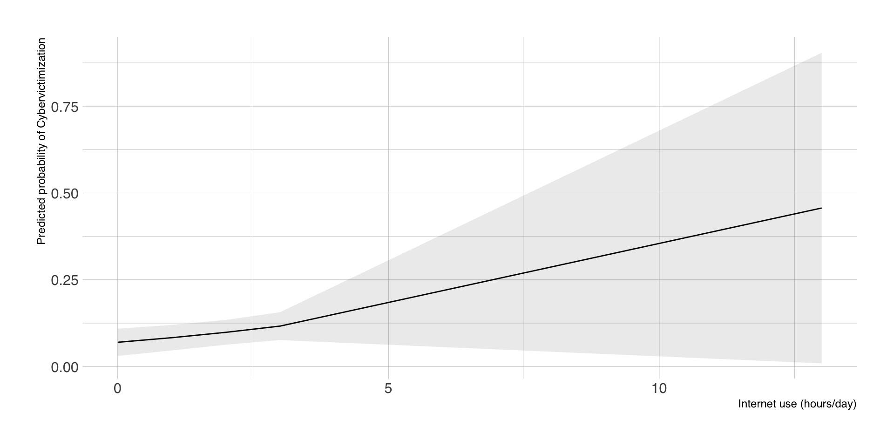
Fazit
- in vielen Fällen ist die logistische Regression eine sinnvolle Alternative zu Kreuztabellen
- die Modellierung ist praktisch identisch mit linearen Regressionsmodellen
- die Interpretation der Koeffizienten ist komplexer, aber AME und Modellvorhersagen helfen dabei
- das Linear Probability Model führt oft zu ähnlichen Ergebnissen (vor allem wenn Y nicht allzu selten oder häufig 1 ist)
Sitzung 11
Take-Home #3 - Haupteffekte
| Parameter | Coefficient | 95% CI | t(2987) | p | Std. Coef. | Fit |
|---|---|---|---|---|---|---|
| (Intercept) | 0.36 | (0.21, 0.52) | 4.57 | < .001 | -0.11 | |
| Type (TN) | 0.35 | (0.25, 0.46) | 6.89 | < .001 | 0.23 | |
| Interesting | 0.45 | (0.41, 0.48) | 26.98 | < .001 | 0.44 | |
| AICc | 10512.35 | |||||
| R2 | 0.20 | |||||
| R2 (adj.) | 0.20 | |||||
| Sigma | 1.40 |
Take-Home #3 - Interaktionseffekt
| Parameter | Coefficient | 95% CI | t(2986) | p | Std. Coef. | Fit |
|---|---|---|---|---|---|---|
| (Intercept) | 0.64 | (0.44, 0.83) | 6.31 | < .001 | -0.11 | |
| Type (TN) | -0.25 | (-0.54, 0.04) | -1.69 | 0.091 | 0.23 | |
| Interesting | 0.38 | (0.34, 0.43) | 17.37 | < .001 | 0.38 | |
| Type (TN) × Interesting | 0.15 | (0.08, 0.21) | 4.38 | < .001 | 0.14 | |
| AICc | 10495.21 | |||||
| R2 | 0.21 | |||||
| R2 (adj.) | 0.21 | |||||
| Sigma | 1.40 |
Take-Home #3 - Modellvorhersagen
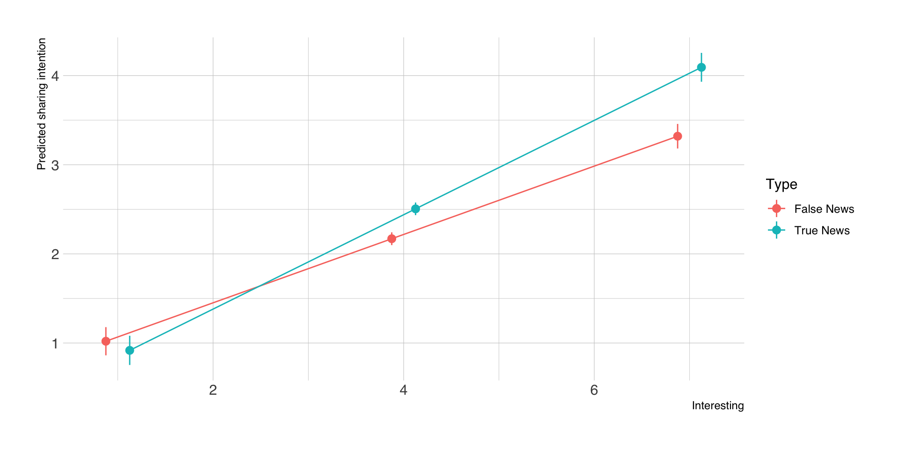
Nochmal Modellannahmen: Unabhängigkeit
- beim GLM gehen wir davon aus, dass die Residuen unabhängig voneinander sind
- Annahme ist verletzt, wenn die Fälle der Stichprobe nicht unabhängig voneinander sind
- typische Fälle sind (a) zeitliche Abhängigkeiten, z.B. durch Messwiederholung, und (b) Abhängigkeiten durch geschachtelte Daten
- wenn Unabhängigkeitsannahme verletzt ist, werden (a) Schätzer verzerrt sein und (b) die Standardfehler zu klein, d.h. erhöhtes Risiko für Alpha-Fehler
Was sind geschachtelte (nested) Daten?
Level-1-Einheiten gehören zu/sind geschachtelt in Level-2-Einheiten.
Schüler geschachtelt in Klassen oder Schulen
Beiträge geschachtelt in Nachrichtenoutlets, Accounts, Ausgaben oder Sendungen
Messungen geschachtelt in Personen (Personen sind Level-2!)
Daten können auch auf mehr als zwei hierarchischen Ebenen (Schüler, Klasse, Schule) geschachtelt oder kreuzklassifiziert sein
bei kreuzklassifizierten Daten gehören Level-1-Einheiten zu min. zwei verschiedenen Kontexten (z.B. Bewertungen von Werbespots gehören zu bewertenden Personen und bewerteten Spots)
Warum Multilevel-Modelle?
statistische Gründe: Die Schachtelung der Level-1-Einheiten muss auch berücksichtigt werden, wenn nur Level-1-Zusammenhänge von Interesse sind (dependence as a nuisance).
substanziellen Gründe: Multilevel-Modelle erlauben eine Zerlegung in Between- und Within-Group-Varianz und damit die adäquate Modellierung von Zusammenhängen auf verschiedenen Ebenen (dependence as an interesting phenomenon).
Grundbegriffe
- Multilevel Model = Hierarchical Model = Mixed Effects Model (= Mehrebenen-Modell)
- Between-Group-Varianz = Varianz, die durch Unterschiede in den Level-2-Einheiten erzeugt wird
- Within-Group-Varianz = Varianz, die durch Unterschiede der Level-1-Einheiten innerhalb derselben Level-2-Einheit erzeugt wird
- Fixed Effects = Zusammenhänge, die in allen Level-2-Kontexten gleich sind
- Random (Varying) Effects = Zusammenhänge, die über die Level-2-Kontexte variieren
- Cross-Level-Interaction = Zusammenhang zwischen Level-1-Effekt und Level-2-Kontextmerkmalen
Nullmodell mit varierenden Intercepts
Das Multilevel-Nullmodell für geschachtelte Daten mit \(i\) Individuen in \(j\) Gruppen besteht aus je einem Nullmodell pro Ebene:
Level 1: \(Y_{ij} = b_{0j}+ \epsilon_{ij}\) und Level 2: \(b_{0j} = \gamma_{00} + u_{0j}\)
oder zusammengenommen: \(Y_{ij} = \gamma_{00} + u_{0j} + \epsilon_{ij}\)
\(\gamma_{00}\) ist der globale Mittelwert von \(Y\), \(u_{0j}\) ist die gruppenspezifische Abweichung vom globalen Mittelwert und \(\epsilon_{ij}\) ist das individuelle Residuum.
Intra-Class-Correlation (ICC)
- zu Beginn sollte man ein Nullmodell (d.h. ohne Prädiktoren) schätzen, um die Intra-Class-Correlation (ICC) zu berechnen
- ICC Anteil der Varianz in einer Variable, der durch die Kontexte (Level-2) erklärt wird. Technisch: der Anteil Between-Group-Varianz (also die Varianz von \(u_{0j}\)) an der Gesamtvarianz von \(Y\).
- wenn der ICC hoch ist (viel Gruppenvarianz), lohnt sich die Betrachtung von Level-2-Prädiktoren
- wenn der ICC niedrig ist (wenig Gruppenvarianz), sind Level-1-Prädiktoren ein sinnvolleres Ziel
- selbst bei kleinem ICC ist Mehrebenenanalyse sinnvoll, da sie nie “schlechter” als ein klassisches Regressionsmodell ist
Regression und Multilevel-Regression
- Multilevel-Modelle sind eine konzeptionelle Erweiterung der (linearen) Regression
- alle Annahmen der Regression (Normalverteilung der Residuen, Homoskedastizität, Linearität) weiterhin
- gruppenspezifischen Abweichungen werden oft nur summarisch, d.h. z.B. ihre Varianz berichtet, aber nicht einzeln inspiziert
- Zentrierung ist üblich, Standardisierung der Koeffizienten eher selten
Random (bzw. Varying-) Intercept Modell
-Intercepts dürfen gruppenspezifisch variieren, Regressionskoeffizienten \(B\) sind für alle Level-2-Einheiten gleich
\(Y_{ij} = \gamma_{00} + u_{0j} + B_1 x_1 + B_2 x_2 + ... + \epsilon_{ij}\)
- die variierenden Intercepts die Abweichungen der einzelnen Level-2-Einheiten vom globalen Intercept
- Output und Interpretation der Regressionskoeffizienten entspricht dem regulären linearen Regressionsmodell
\(R^2\) und Modellvergleich
- In Multilevel-Modellen gibt es keinen Standard für die Berechnung von \(R^2\)
- Alternative 1: separate Inspektion bzw. Modellvergleich der einzelnen Varianzkomponenten (Residual und Level-2-Varianz) hat den Vorteil, dass man recht klar erkennen kann, welche L1- bzw. L2-Prädiktoren wie das Modell verbessern
- Alternative 2: Globalmaße, die in entweder nur die Fixed Effects (marginal \(R2\)) oder Fixed und Random Effects (conditional \(R2\)) berücksichtigen (Nakagawa et al., 2017)
- Wie beim partiellen F-Test der Regression kann man auch verschiedene Modelle miteinander hinsichtlich ihrer Varianzaufklärung vergleichen, dies wird oft Likelihood-Ratio-Test genannt
Modellerweiterungen
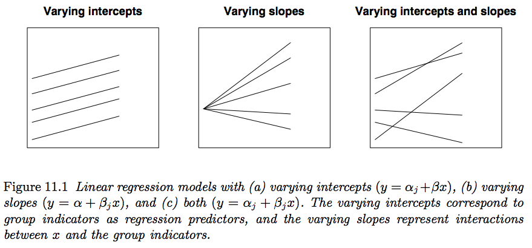
- zusätzlich zu den Intercepts kann man auch Regressionskoeffizienten über die Level-2-Einheiten variieren lassen, um die Effektheterogenität über Gruppen zu prüfen
- ebenso kann man Interaktionen sowohl innerhalb einer Ebene als auch sog. Cross-Level-Interactions modellieren, d.h. ob der Kontext- den Individualeffekt moderiert
Beispielstudie: Fähnrich et al. (2020)
Daten
- Stichprobe von 10807 Facebook-Posts von 42 Universitäten
- Uni-Fans ist die Anzahl Fans der Facebook-Seite (in Tausend), d.h. hier eine Level-2-Variable
- Alle anderen Variablen sind pro Post, d.h. Level-1-Variablen.
| uni | uni_fans | created_time | type | likes_count | comments_count |
|---|---|---|---|---|---|
| U British Columbia | 121.04 | 2013-06-20 18:22:58 | photo | 66 | 5 |
| U Colorado Boulder | 154.47 | 2012-10-30 20:03:57 | link | 253 | 56 |
| U Michigan | 710.50 | 2013-08-01 17:26:54 | photo | 7968 | 261 |
| U British Columbia | 121.04 | 2015-09-08 19:53:00 | photo | 11 | 2 |
| Johns Hopkins U | 113.61 | 2014-04-10 19:59:07 | video | 20 | 0 |
Outcome-Variable
| Variable | n_Obs | Mean | SD | Median | MAD | Min | Max |
|---|---|---|---|---|---|---|---|
| comments_count | 10807 | 12.15 | 36.46 | 3 | 4.45 | 0 | 1556 |
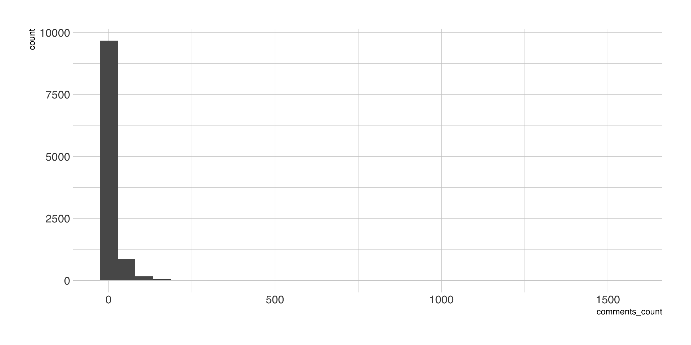
Nullmodell und ICC
| Parameter | Coefficient | 95% CI | t(10804) | p | Effects | Group | Std. Coef. | Fit |
|---|---|---|---|---|---|---|---|---|
| (Intercept) | 14.34 | (9.23, 19.44) | 5.50 | < .001 | fixed | 0.06 | ||
| 16.71 | random | uni | ||||||
| 33.32 | random | Residual | ||||||
| AICc | 106618.77 | |||||||
| R2 (conditional) | 0.20 | |||||||
| R2 (marginal) | 0.00 | |||||||
| Sigma | 33.32 |
Vorhergesagte Werte (Uni-Page)
| uni | estimate | std.error | statistic | p.value | conf.low | conf.high | df |
|---|---|---|---|---|---|---|---|
| Columbia U | 2.33 | 2.61 | 0.89 | 0.37 | -2.78 | 7.44 | Inf |
| Cornell U | 9.40 | 2.61 | 3.61 | 0.00 | 4.29 | 14.51 | Inf |
| Duke U | 8.69 | 2.61 | 3.34 | 0.00 | 3.58 | 13.80 | Inf |
| Harvard U | 66.38 | 2.61 | 25.48 | 0.00 | 61.27 | 71.48 | Inf |
| Imperial College London | 3.40 | 2.61 | 1.30 | 0.19 | -1.71 | 8.50 | Inf |
| Johns Hopkins U | 3.18 | 2.61 | 1.22 | 0.22 | -1.92 | 8.29 | Inf |
| MIT | 15.76 | 2.61 | 6.05 | 0.00 | 10.66 | 20.87 | Inf |
| New York U | 10.71 | 2.61 | 4.11 | 0.00 | 5.61 | 15.82 | Inf |
| Northwestern U | 7.88 | 2.61 | 3.03 | 0.00 | 2.78 | 12.99 | Inf |
| Princeton U | 5.63 | 2.61 | 2.16 | 0.03 | 0.53 | 10.74 | Inf |
Varying Intercept-Modell (Topic Research)
| Parameter | Coefficient | 95% CI | t(10387) | p | Effects | Group | Std. Coef. | Fit |
|---|---|---|---|---|---|---|---|---|
| (Intercept) | 15.57 | (10.48, 20.67) | 5.99 | < .001 | fixed | 0.06 | ||
| topic research | -4.06 | (-5.53, -2.59) | -5.42 | < .001 | fixed | -0.05 | ||
| AICc | 102577.73 | |||||||
| R2 (conditional) | 0.20 | |||||||
| R2 (marginal) | 0.00 | |||||||
| Sigma | 33.41 |
Modellvorhersagen (varying intercepts)
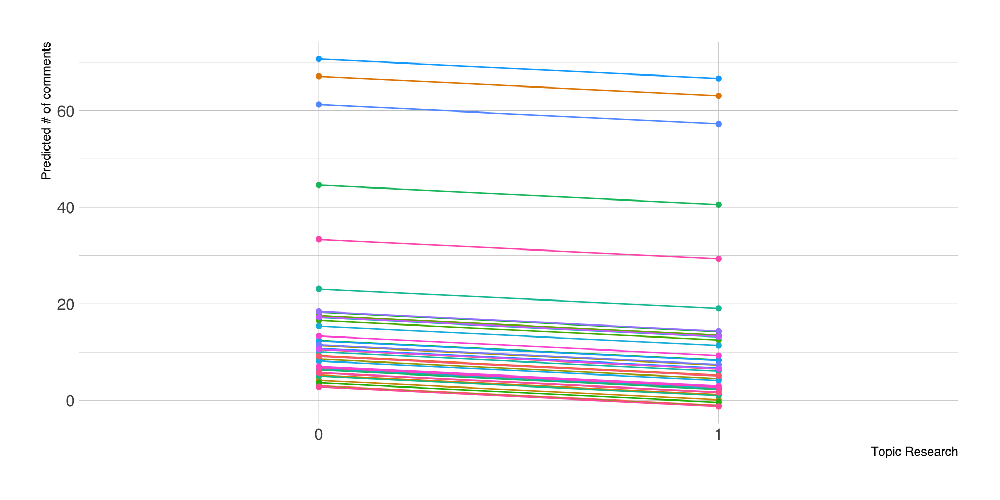
Varying Intercept vs. Varying Slope-Modell
| npar | AIC | BIC | logLik | -2*log(L) | Chisq | Df | Pr(>Chisq) | |
|---|---|---|---|---|---|---|---|---|
| m1_research | 4 | 102582.7 | 102611.7 | -51287.36 | 102574.7 | |||
| m2_research_vs | 6 | 102532.8 | 102576.3 | -51260.39 | 102520.8 | 53.93 | 2 | 0 |
Varying Slopes pro Uni-Page
| term | uni | estimate | std.error | statistic | p.value | conf.low | conf.high |
|---|---|---|---|---|---|---|---|
| topic_research | Columbia U | -0.43 | 1.22 | -0.35 | 0.72 | -2.82 | 1.96 |
| topic_research | Cornell U | -3.15 | 1.22 | -2.58 | 0.01 | -5.54 | -0.76 |
| topic_research | Duke U | -2.72 | 1.22 | -2.23 | 0.03 | -5.11 | -0.33 |
| topic_research | Harvard U | -24.59 | 1.22 | -20.16 | 0.00 | -26.98 | -22.20 |
| topic_research | Imperial College London | -0.91 | 1.22 | -0.75 | 0.45 | -3.30 | 1.48 |
| topic_research | Johns Hopkins U | -0.73 | 1.22 | -0.60 | 0.55 | -3.13 | 1.66 |
| topic_research | MIT | -5.51 | 1.22 | -4.52 | 0.00 | -7.90 | -3.12 |
| topic_research | New York U | -3.48 | 1.22 | -2.85 | 0.00 | -5.87 | -1.09 |
| topic_research | Northwestern U | -2.43 | 1.22 | -1.99 | 0.05 | -4.82 | -0.04 |
| topic_research | Princeton U | -1.67 | 1.22 | -1.37 | 0.17 | -4.07 | 0.72 |
Modellvorhersagen (varying slopes)
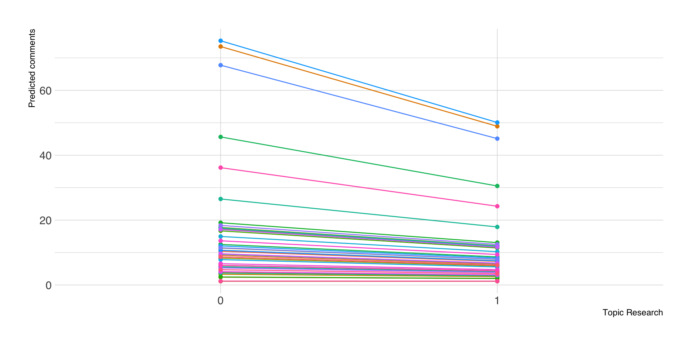
Modell mit Level-2-Prädiktor
| Parameter | Coefficient | 95% CI | t(10384) | p | Effects | Group | Std. Coef. | Fit |
|---|---|---|---|---|---|---|---|---|
| (Intercept) | 10.88 | (6.56, 15.19) | 4.94 | < .001 | fixed | 0.05 | ||
| topic research | -5.69 | (-8.35, -3.04) | -4.21 | < .001 | fixed | -0.07 | ||
| uni fans | 0.01 | (0.01, 0.01) | 8.18 | < .001 | fixed | 0.21 | ||
| AICc | 102509.01 | |||||||
| R2 (conditional) | 0.16 | |||||||
| R2 (marginal) | 0.05 | |||||||
| Sigma | 33.32 |
Fazit
in der Kommunikationswissenschaft sind geschachtelte Daten nahezu überall anzutreffen, sei es bei Inhaltsanalysen, Panel- oder Mehrländer-Befragungen
oft sind auch Personen die Level-2-Einheiten, z.B. bei Experience-Sampling-Daten oder Within-Subject-Experimenten
die Grundlogik der Multilevel-Analyse entspricht dem linearen Modell, lediglich die Art und Weise, die Schachtelung zu berücksichtigen, variiert
wenn Verdacht auf Verletzung der Unabhängigkeitsannahme besteht, kann man immer zumindest ein Varying Intercept Modell schätzen, das nie “schlechter” als ein lineares Regressionsmodell ist
technisch muss man in R (fast) nur
lm()durchlmer()ersetzen und die Modellformel leicht anpassen (siehe praktische Übung)
Take-Home #3
- in den Studien von Altay et al. (2022) haben ale TeilnehmerInnen mehrere Artikel bewertet
- Unabhängigkeit der Bewertungen ist damit klar verletzt, unsere Single-Level-Analysen eigentlich nicht korrekt
- der ICC ist mit .45 sehr groß, d.h. Bereitschaft, einen Beitrag zu teilen, hängt erheblich von der Person, nicht (nur) vom Beitrag ab
| ICC_adjusted | ICC_unadjusted | optional |
|---|---|---|
| 0.45 | 0.45 | FALSE |
Take-Home #3 - Single vs. Multilevel Modell
| Share | Share | |||||
|---|---|---|---|---|---|---|
| Predictors | Estimates | CI | p | Estimates | CI | p |
| (Intercept) | 2.23 | 2.15 – 2.30 | <0.001 | 2.23 | 2.11 – 2.35 | <0.001 |
| Type [TN] | 0.36 | 0.26 – 0.46 | <0.001 | 0.34 | 0.27 – 0.42 | <0.001 |
| Interesting c | 0.38 | 0.34 – 0.43 | <0.001 | 0.34 | 0.30 – 0.37 | <0.001 |
| Type [TN] × Interesting c | 0.15 | 0.08 – 0.21 | <0.001 | 0.14 | 0.09 – 0.19 | <0.001 |
| Random Effects | ||||||
| σ2 | 1.04 | |||||
| τ00 | 0.92 Participants | |||||
| ICC | 0.47 | |||||
| N | 299 Participants | |||||
| Observations | 2990 | 2990 | ||||
| R2 / R2 adjusted | 0.206 / 0.205 | 0.173 / 0.562 | ||||
Take-Home #3
- Koeffizienten sind sich im Multilevel-Modell praktisch gleich
- Präzision der Schätzung ist höher (kleinere Standardfehler, engere CI)
- wir haben aber zusätzlich erfahren, dass Sharing fast zur Hälfte von der Person abhängt
- dementsprechend kann man Follow-Up-Studien oder Interventionen planen
Literatur
Auty, S., & Lewis, C. (2004). Exploring children’s choice: The reminder effect of product placement. Psychology & Marketing, 21(9), 697–713. https://doi.org/10.1002/mar.20025
Festl, R., Scharkow, M., & Quandt, T. (2013). Peer Influence, Internet use and Cyberbullying: A Comparison of Different Context Effects among German Adolescents. Journal of Children and Media, 7(4), 446–462. https://doi.org/10.1080/17482798.2013.781514
Johannes, N., Dienlin, T., Bakhshi, H., & Przybylski, A. K. (2022). No effect of different types of media on well-being. Scientific Reports, 12(1), 61.
Kümpel, A. S. (2019). Getting Tagged, Getting Involved with News? A Mixed-Methods Investigation of the Effects and Motives of News-Related Tagging Activities on Social Network Sites. Journal of Communication, 69(4), 373–395. https://doi.org/10.1093/joc/jqz019
Van Erkel, P. F., & Van Aelst, P. (2021). Why don’t we learn from social media? Studying effects of and mechanisms behind social media news use on general surveillance political knowledge. Political Communication, 38(4), 407–425. https://doi.org/10.1080/10584609.2020.1784328
Vögele, C., & Bachl, M. (2017). Der einfluss des dialekts auf die bewertung von politikern. Studies in Communication | Media, 6(2), 196–215. https://doi.org/10.5771/2192-4007-2017-2-196